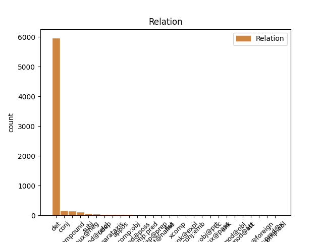
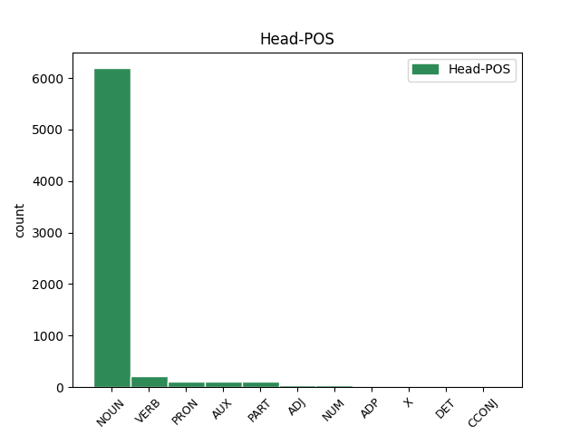
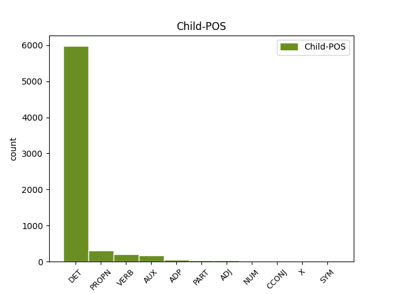

Distribution of features within this leaf



Agreement Rules sorted by frequency.
- When the dependent token is the determiner(det) of the head token, and the head token is NOUN and the dependent token is DET.
1 Un _ _ _ _ 0 _ _ _
2 devezh _ _ _ _ 0 _ _ _
3 an an DET _ Definite=Def|Number=Sing|PronType=Art 4 det _ _
4 ofisour ofisour NOUN _ Case=NomAcc|Definite=Def|Gender=Masc|Number=Sing 0 _ _ _
5 o _ _ _ _ 0 _ _ _
6 vale _ _ _ _ 0 _ _ _
7 war _ _ _ _ 0 _ _ _
8 gein _ _ _ _ 0 _ _ _
9 e _ _ _ _ 0 _ _ _
10 jav _ _ _ _ 0 _ _ _
11 , _ _ _ _ 0 _ _ _
1 Unan _ _ _ _ 0 _ _ _
2 deus _ _ _ _ 0 _ _ _
3 merc'hed _ _ _ _ 0 _ _ _
4 ar _ _ _ _ 0 _ _ _
5 fur fur NOUN _ Case=NomAcc|Gender=Masc|Number=Sing 0 _ _ _
6 Nicolède Nicolède PROPN _ Case=NomAcc|Gender=Masc|Number=Sing 5 compound _ _
7 ( _ _ _ _ 0 _ _ _
8 ha _ _ _ _ 0 _ _ _
9 c'hoar _ _ _ _ 0 _ _ _
10 C'ian _ _ _ _ 0 _ _ _
11 neuze _ _ _ _ 0 _ _ _
12 ' _ _ _ _ 0 _ _ _
13 ta _ _ _ _ 0 _ _ _
14 ) _ _ _ _ 0 _ _ _
15 . _ _ _ _ 0 _ _ _
1 Tiez _ _ _ _ 0 _ _ _
2 - _ _ _ _ 0 _ _ _
3 te _ _ _ _ 0 _ _ _
4 a _ _ _ _ 0 _ _ _
5 zo _ _ _ _ 0 _ _ _
6 niverus _ _ _ _ 0 _ _ _
7 e _ _ _ _ 0 _ _ _
8 Beijing _ _ _ _ 0 _ _ _
9 hag _ _ _ _ 0 _ _ _
10 an an DET _ Definite=Def|Number=Sing|PronType=Art 11 det _ _
11 te te PRON _ Number=Sing|Person=2 0 _ _ _
12 a _ _ _ _ 0 _ _ _
13 zo _ _ _ _ 0 _ _ _
14 ur _ _ _ _ 0 _ _ _
15 perzh _ _ _ _ 0 _ _ _
16 pouezhus _ _ _ _ 0 _ _ _
17 eus _ _ _ _ 0 _ _ _
18 ar _ _ _ _ 0 _ _ _
19 sevenadur _ _ _ _ 0 _ _ _
20 lec'hiel _ _ _ _ 0 _ _ _
21 . _ _ _ _ 0 _ _ _
1 E _ _ _ _ 0 _ _ _
2 - _ _ _ _ 0 _ _ _
3 touez _ VERB _ Mood=Imp|Number=Sing|Person=2|VerbForm=Fin 0 _ _ _
4 ar _ _ _ _ 0 _ _ _
5 seurtoù _ _ _ _ 0 _ _ _
6 mein _ _ _ _ 0 _ _ _
7 gouelezennek _ _ _ _ 0 _ _ _
8 e _ _ _ _ 0 _ _ _
9 vez _ VERB _ Aspect=Hab|Mood=Ind|Number=Sing|Person=3|Polarity=Pos|Tense=Pres 3 conj _ _
10 kavet _ _ _ _ 0 _ _ _
11 mein _ _ _ _ 0 _ _ _
12 - _ _ _ _ 0 _ _ _
13 torbez _ _ _ _ 0 _ _ _
14 . _ _ _ _ 0 _ _ _
1 E _ _ _ _ 0 _ _ _
2 dibenn _ _ _ _ 0 _ _ _
3 194ô _ _ _ _ 0 _ _ _
4 e e PART _ Mood=Ind|Number=Sing|Person=3|Polarity=Neg|VerbForm=Fin 0 _ _ _
5 oa is AUX _ Number=Sing|Person=2 4 comp:aux@neg _ _
6 deuet _ _ _ _ 0 _ _ _
7 ar _ _ _ _ 0 _ _ _
8 brezel _ _ _ _ 0 _ _ _
9 da _ _ _ _ 0 _ _ _
10 vezañ _ _ _ _ 0 _ _ _
11 didec'hus _ _ _ _ 0 _ _ _
12 hag _ _ _ _ 0 _ _ _
13 HO _ _ _ _ 0 _ _ _
14 a _ _ _ _ 0 _ _ _
15 zisklerias _ _ _ _ 0 _ _ _
16 neuze _ _ _ _ 0 _ _ _
17 d'ur _ _ _ _ 0 _ _ _
18 Gall _ _ _ _ 0 _ _ _
19 : _ _ _ _ 0 _ _ _
20 " _ _ _ _ 0 _ _ _
21 C'hwi _ _ _ _ 0 _ _ _
22 a _ _ _ _ 0 _ _ _
23 c'hell _ _ _ _ 0 _ _ _
24 lazhañ _ _ _ _ 0 _ _ _
25 dek _ _ _ _ 0 _ _ _
26 deomp _ _ _ _ 0 _ _ _
27 evit _ _ _ _ 0 _ _ _
28 unan _ _ _ _ 0 _ _ _
29 deoc'h _ _ _ _ 0 _ _ _
30 hogen _ _ _ _ 0 _ _ _
31 daoust _ _ _ _ 0 _ _ _
32 da _ _ _ _ 0 _ _ _
33 se _ _ _ _ 0 _ _ _
34 e _ _ _ _ 0 _ _ _
35 talc'himp _ _ _ _ 0 _ _ _
36 ha _ _ _ _ 0 _ _ _
37 trec'h _ _ _ _ 0 _ _ _
38 e _ _ _ _ 0 _ _ _
39 vimp _ _ _ _ 0 _ _ _
40 en _ _ _ _ 0 _ _ _
41 diwezh _ _ _ _ 0 _ _ _
42 . _ _ _ _ 0 _ _ _
43 " _ _ _ _ 0 _ _ _
1 Meur _ _ _ _ 0 _ _ _
2 a _ _ _ _ 0 _ _ _
3 rannyezh _ _ _ _ 0 _ _ _
4 ez _ _ _ _ 0 _ _ _
5 eus _ _ _ _ 0 _ _ _
6 , _ _ _ _ 0 _ _ _
7 disheñvel _ _ _ _ 0 _ _ _
8 a _ _ _ _ 0 _ _ _
9 - _ _ _ _ 0 _ _ _
10 walc'h _ _ _ _ 0 _ _ _
11 an an DET _ Definite=Def|Number=Sing|PronType=Art 12 det _ _
12 eil _ ADJ _ Case=NomAcc|Definite=Def|Gender=Masc|Number=Sing 0 _ _ _
13 diouzh _ _ _ _ 0 _ _ _
14 eben _ _ _ _ 0 _ _ _
15 : _ _ _ _ 0 _ _ _
1 Volusianus Volusianus PROPN _ Case=Nom|Gender=Masc|Number=Sing 2 subj _ _
2 war sein VERB _ Mood=Ind|Number=Sing|Person=3|Tense=Past|VerbForm=Fin 0 _ _ _
3 ur _ _ _ _ 0 _ _ _
4 pezh _ _ _ _ 0 _ _ _
5 moneiz _ _ _ _ 0 _ _ _
6 . _ _ _ _ 0 _ _ _
1 Div _ _ _ _ 0 _ _ _
2 rannyezh _ _ _ _ 0 _ _ _
3 ez _ _ _ _ 0 _ _ _
4 eus _ _ _ _ 0 _ _ _
5 , _ _ _ _ 0 _ _ _
6 tost _ _ _ _ 0 _ _ _
7 - _ _ _ _ 0 _ _ _
8 tre _ _ _ _ 0 _ _ _
9 an an DET _ Definite=Def|Number=Sing|PronType=Art 10 det _ _
10 eil eil NUM _ Case=NomAcc|Definite=Def|Gender=Masc|Number=Sing 0 _ _ _
11 d'eben _ _ _ _ 0 _ _ _
12 : _ _ _ _ 0 _ _ _
1 E _ _ _ _ 0 _ _ _
2 1684 _ _ _ _ 0 _ _ _
3 e _ _ _ _ 0 _ _ _
4 yeas _ _ _ _ 0 _ _ _
5 da _ _ _ _ 0 _ _ _
6 eiler eiler NOUN _ Case=NomAcc|Gender=Masc|Number=Sing 0 _ _ _
7 mirour _ _ _ _ 0 _ _ _
8 an _ _ _ _ 0 _ _ _
9 Ashmolean _ _ _ _ 0 _ _ _
10 Museum _ _ _ _ 0 _ _ _
11 , _ _ _ _ 0 _ _ _
12 Robert Robert PROPN _ Case=NomAcc|Gender=Masc|Number=Sing 6 appos _ _
13 Plot _ _ _ _ 0 _ _ _
14 . _ _ _ _ 0 _ _ _
1 Gwechall _ _ _ _ 0 _ _ _
2 gozh _ _ _ _ 0 _ _ _
3 e e PART _ Mood=Ind|Number=Sing|Person=3|Polarity=Neg|VerbForm=Fin 0 _ _ _
4 veze veze VERB _ Mood=Imp|Number=Sing|Person=2|Polarity=Neg|VerbForm=Fin 3 comp:aux@neg _ _
5 kavet _ _ _ _ 0 _ _ _
6 en _ _ _ _ 0 _ _ _
7 tuchennoù _ _ _ _ 0 _ _ _
8 war _ _ _ _ 0 _ _ _
9 - _ _ _ _ 0 _ _ _
10 dro _ _ _ _ 0 _ _ _
11 an _ _ _ _ 0 _ _ _
12 Himalaya _ _ _ _ 0 _ _ _
13 . _ _ _ _ 0 _ _ _
1 Muzulman _ _ _ _ 0 _ _ _
2 e e AUX _ Mood=Ind|Number=Sing|Person=3|Polarity=Neg|VerbForm=Fin 0 _ _ _
3 oa a AUX _ Mood=Imp|Number=Sing|Person=2|VerbForm=Fin 2 comp:aux@neg _ _
4 , _ _ _ _ 0 _ _ _
5 eus _ _ _ _ 0 _ _ _
6 ar _ _ _ _ 0 _ _ _
7 boblad _ _ _ _ 0 _ _ _
8 Hui _ _ _ _ 0 _ _ _
9 ha _ _ _ _ 0 _ _ _
10 genidik _ _ _ _ 0 _ _ _
11 e _ _ _ _ 0 _ _ _
12 oa _ _ _ _ 0 _ _ _
13 eus _ _ _ _ 0 _ _ _
14 proviñs _ _ _ _ 0 _ _ _
15 Yunnan _ _ _ _ 0 _ _ _
16 . _ _ _ _ 0 _ _ _
1 Diwar _ _ _ _ 0 _ _ _
2 studi _ _ _ _ 0 _ _ _
3 ar _ _ _ _ 0 _ _ _
4 c'hlasoù _ _ _ _ 0 _ _ _
5 e _ _ _ _ 0 _ _ _
6 veze _ _ _ _ 0 _ _ _
7 , _ _ _ _ 0 _ _ _
8 sañset _ _ _ _ 0 _ _ _
9 , _ _ _ _ 0 _ _ _
10 roet _ _ _ _ 0 _ _ _
11 un _ _ _ _ 0 _ _ _
12 hentenn _ _ _ _ 0 _ _ _
13 evit _ _ _ _ 0 _ _ _
14 kompren _ _ _ _ 0 _ _ _
15 ar _ _ _ _ 0 _ _ _
16 bed _ _ _ _ 0 _ _ _
17 ha _ _ _ _ 0 _ _ _
18 kavout _ _ _ _ 0 _ _ _
19 alc'hwezioù _ _ _ _ 0 _ _ _
20 ar _ _ _ _ 0 _ _ _
21 c'haerder _ _ _ _ 0 _ _ _
22 diwar _ _ _ _ 0 _ _ _
23 an _ _ _ _ 0 _ _ _
24 hini _ _ _ _ 0 _ _ _
25 gaerrañ _ _ _ _ 0 _ _ _
26 eus _ _ _ _ 0 _ _ _
27 ar _ _ _ _ 0 _ _ _
28 pezh pezh NOUN _ Number=Sing 0 _ _ _
29 a _ _ _ _ 0 _ _ _
30 oa oa AUX _ Number=Sing|Person=2 28 mod@relcl _ _
31 bet _ _ _ _ 0 _ _ _
32 lavaret _ _ _ _ 0 _ _ _
33 ha _ _ _ _ 0 _ _ _
34 prederiet _ _ _ _ 0 _ _ _
35 er _ _ _ _ 0 _ _ _
36 bed _ _ _ _ 0 _ _ _
37 a _ _ _ _ 0 _ _ _
38 - _ _ _ _ 0 _ _ _
39 bezh _ _ _ _ 0 _ _ _
40 . _ _ _ _ 0 _ _ _
1 Ganet _ _ _ _ 0 _ _ _
2 e _ _ _ _ 0 _ _ _
3 voe voe VERB _ Mood=Ind|Number=Sing|Person=3|Tense=Past|VerbForm=Fin 0 _ _ _
4 d'an _ _ _ _ 0 _ _ _
5 29 _ _ _ _ 0 _ _ _
6 a _ _ _ _ 0 _ _ _
7 viz _ _ _ _ 0 _ _ _
8 Here _ _ _ _ 0 _ _ _
9 1878 _ _ _ _ 0 _ _ _
10 e _ _ _ _ 0 _ _ _
11 Bourdel _ _ _ _ 0 _ _ _
12 ha avere AUX _ Mood=Ind|Number=Sing|Person=3|Tense=Pres|VerbForm=Fin 3 conj _ _
13 mervel _ _ _ _ 0 _ _ _
14 a _ _ _ _ 0 _ _ _
15 reas _ _ _ _ 0 _ _ _
16 d'ar _ _ _ _ 0 _ _ _
17 4 _ _ _ _ 0 _ _ _
18 a _ _ _ _ 0 _ _ _
19 viz _ _ _ _ 0 _ _ _
20 C'hwrevrer _ _ _ _ 0 _ _ _
21 1949 _ _ _ _ 0 _ _ _
22 e _ _ _ _ 0 _ _ _
23 Kintin _ _ _ _ 0 _ _ _
24 . _ _ _ _ 0 _ _ _
1 Betek _ _ _ _ 0 _ _ _
2 - _ _ _ _ 0 _ _ _
3 henn _ _ _ _ 0 _ _ _
4 e _ _ _ _ 0 _ _ _
5 oa _ _ _ _ 0 _ _ _
6 an _ _ _ _ 0 _ _ _
7 talvoud talvoud NOUN _ Case=NomAcc|Definite=Def|Gender=Masc|Number=Sing 0 _ _ _
8 nesaet _ _ _ _ 0 _ _ _
9 a _ _ _ _ 0 _ _ _
10 veze veze VERB _ Mood=Imp|Number=Sing|Person=2|Polarity=Neg|VerbForm=Fin 7 mod@relcl _ _
11 graet _ _ _ _ 0 _ _ _
12 gantañ _ _ _ _ 0 _ _ _
13 : _ _ _ _ 0 _ _ _
1 Breudeur Breudeur PROPN _ Number=Sing 2 subj _ _
2 ha hve AUX _ Mood=Ind|Number=Sing|Person=3|Tense=Pres|VerbForm=Fin 0 _ _ _
3 c'hoarezed _ _ _ _ 0 _ _ _
4 he _ _ _ _ 0 _ _ _
5 doa _ _ _ _ 0 _ _ _
6 : _ _ _ _ 0 _ _ _
7 Agave _ _ _ _ 0 _ _ _
8 , _ _ _ _ 0 _ _ _
9 Semele _ _ _ _ 0 _ _ _
10 , _ _ _ _ 0 _ _ _
11 Polydoros _ _ _ _ 0 _ _ _
12 , _ _ _ _ 0 _ _ _
13 Aotonoe _ _ _ _ 0 _ _ _
14 . _ _ _ _ 0 _ _ _
1 E _ _ _ _ 0 _ _ _
2 1992 _ _ _ _ 0 _ _ _
3 e _ _ _ _ 0 _ _ _
4 voe _ AUX _ Mood=Ind|Number=Sing|Person=3|Tense=Past|VerbForm=Fin 0 _ _ _
5 pedet _ _ _ _ 0 _ _ _
6 da _ _ _ _ 0 _ _ _
7 c'houel _ _ _ _ 0 _ _ _
8 an _ _ _ _ 0 _ _ _
9 transmusicales _ _ _ _ 0 _ _ _
10 e _ _ _ _ 0 _ _ _
11 Roazhon _ _ _ _ 0 _ _ _
12 ha haver AUX _ Mood=Ind|Number=Sing|Person=3|Tense=Pres|VerbForm=Fin 4 conj _ _
13 kanañ _ _ _ _ 0 _ _ _
14 a _ _ _ _ 0 _ _ _
15 reas _ _ _ _ 0 _ _ _
16 e _ _ _ _ 0 _ _ _
17 - _ _ _ _ 0 _ _ _
18 unan _ _ _ _ 0 _ _ _
19 a _ _ _ _ 0 _ _ _
20 capella _ _ _ _ 0 _ _ _
21 etre _ _ _ _ 0 _ _ _
22 ur _ _ _ _ 0 _ _ _
23 strollad _ _ _ _ 0 _ _ _
24 rock _ _ _ _ 0 _ _ _
25 hag _ _ _ _ 0 _ _ _
26 ur _ _ _ _ 0 _ _ _
27 strollad _ _ _ _ 0 _ _ _
28 rap _ _ _ _ 0 _ _ _
29 , _ _ _ _ 0 _ _ _
30 dirak _ _ _ _ 0 _ _ _
31 tud _ _ _ _ 0 _ _ _
32 n'anavezas _ _ _ _ 0 _ _ _
33 netra _ _ _ _ 0 _ _ _
34 diwar _ _ _ _ 0 _ _ _
35 - _ _ _ _ 0 _ _ _
36 benn _ _ _ _ 0 _ _ _
37 ar _ _ _ _ 0 _ _ _
38 c'han _ _ _ _ 0 _ _ _
39 e _ _ _ _ 0 _ _ _
40 brezhoneg _ _ _ _ 0 _ _ _
41 . _ _ _ _ 0 _ _ _
1 Etre _ _ _ _ 0 _ _ _
2 Qin _ _ _ _ 0 _ _ _
3 ha haver VERB _ Mood=Ind|Number=Sing|Person=3|Tense=Pres|VerbForm=Fin 0 _ _ _
4 plaenenn _ _ _ _ 0 _ _ _
5 hanternoz _ _ _ _ 0 _ _ _
6 Sina Sina PROPN _ Case=Abs|Definite=Def|Number=Sing 3 comp:obj _ _
7 edo _ _ _ _ 0 _ _ _
8 e _ _ _ _ 0 _ _ _
9 zouar _ _ _ _ 0 _ _ _
10 . _ _ _ _ 0 _ _ _
1 Strollad _ _ _ _ 0 _ _ _
2 komunour _ _ _ _ 0 _ _ _
3 Sina _ _ _ _ 0 _ _ _
4 an _ _ _ _ 0 _ _ _
5 hini _ _ _ _ 0 _ _ _
6 eo _ _ _ _ 0 _ _ _
7 a _ _ _ _ 0 _ _ _
8 ren _ _ _ _ 0 _ _ _
9 gouarnamant _ _ _ _ 0 _ _ _
10 Republik republik NOUN _ Case=Gen|Gender=Masc|Number=Sing 0 _ _ _
11 Poblel poblel ADJ _ Case=Gen|Gender=Masc|Number=Sing 10 compound _ _
12 Sina _ _ _ _ 0 _ _ _
13 . _ _ _ _ 0 _ _ _
1 Türkiye'de _ _ _ _ 0 _ _ _
2 " _ _ _ _ 0 _ _ _
3 e e NOUN _ Case=Nom|Number=Sing|Person=3 0 _ _ _
4 Turkia Turkia PROPN _ Case=Nom|Number=Sing|Person=3 3 flat _ _
5 " _ _ _ _ 0 _ _ _
6 ( _ _ _ _ 0 _ _ _
7 lokativel _ _ _ _ 0 _ _ _
8 ) _ _ _ _ 0 _ _ _
1 Met _ _ _ _ 0 _ _ _
2 ' _ _ _ _ 0 _ _ _
3 vit _ _ _ _ 0 _ _ _
4 tremen _ _ _ _ 0 _ _ _
5 an an ADP _ Definite=Def|Number=Sing|PronType=Art 6 det _ _
6 amzer amzer NOUN _ Case=NomAcc|Definite=Def|Gender=Masc|Number=Sing 0 _ _ _
7 , _ _ _ _ 0 _ _ _
8 dre _ _ _ _ 0 _ _ _
9 ma _ _ _ _ 0 _ _ _
10 oec'h _ _ _ _ 0 _ _ _
11 ken _ _ _ _ 0 _ _ _
12 galant _ _ _ _ 0 _ _ _
13 . _ _ _ _ 0 _ _ _
14 " _ _ _ _ 0 _ _ _
1 Méet _ _ _ _ 0 _ _ _
2 é _ _ _ _ 0 _ _ _
3 ha _ _ _ _ 0 _ _ _
4 tomméet _ _ _ _ 0 _ _ _
5 , _ _ _ _ 0 _ _ _
6 a _ _ _ _ 0 _ _ _
7 - _ _ _ _ 0 _ _ _
8 zivar _ _ _ _ 0 _ _ _
9 se _ _ _ _ 0 _ _ _
10 e _ _ _ _ 0 _ _ _
11 teu _ _ _ _ 0 _ _ _
12 dë _ _ _ _ 0 _ _ _
13 vé _ _ _ _ 0 _ _ _
14 on _ _ _ _ 0 _ _ _
15 toaz _ _ _ _ 0 _ _ _
16 rouzdu _ _ _ _ 0 _ _ _
17 pé _ _ _ _ 0 _ _ _
18 du _ _ _ _ 0 _ _ _
19 evid evid NOUN _ Number=Sing 0 _ _ _
20 an an ADP _ Definite=Def|Number=Sing|PronType=Art 19 udep _ _
21 afghan _ _ _ _ 0 _ _ _
22 , _ _ _ _ 0 _ _ _
23 solutâd _ _ _ _ 0 _ _ _
24 a _ _ _ _ 0 _ _ _
25 ra _ _ _ _ 0 _ _ _
26 cherr _ _ _ _ 0 _ _ _
27 yéna _ _ _ _ 0 _ _ _
28 , _ _ _ _ 0 _ _ _
29 sed _ _ _ _ 0 _ _ _
30 péz _ _ _ _ 0 _ _ _
31 a _ _ _ _ 0 _ _ _
32 teu _ _ _ _ 0 _ _ _
33 da _ _ _ _ 0 _ _ _
34 vé _ _ _ _ 0 _ _ _
35 an _ _ _ _ 0 _ _ _
36 hachich _ _ _ _ 0 _ _ _
37 . _ _ _ _ 0 _ _ _
1 " _ _ _ _ 0 _ _ _
2 Ma _ _ _ _ 0 _ _ _
3 zi _ VERB _ Mood=Imp|Number=Sing|Person=2|VerbForm=Fin 0 _ _ _
4 eo _ _ _ _ 0 _ _ _
5 bremañ _ _ _ _ 0 _ _ _
6 " _ _ _ _ 0 _ _ _
7 ( _ _ _ _ 0 _ _ _
8 eme _ VERB _ Mood=Ind|Number=Sing|Person=3|Tense=Pres|VerbForm=Fin 3 parataxis _ _
9 Yann _ _ _ _ 0 _ _ _
10 ) _ _ _ _ 0 _ _ _
1 Ragenfrid Ragenfrid PROPN _ Case=NomAcc|Gender=Masc|Number=Sing 4 subj _ _
2 a _ _ _ _ 0 _ _ _
3 anavezas _ _ _ _ 0 _ _ _
4 galloud galloud NOUN _ Case=NomAcc|Gender=Masc|Number=Sing 0 _ _ _
5 Karl _ _ _ _ 0 _ _ _
6 . _ _ _ _ 0 _ _ _
1 Mistral _ _ _ _ 0 _ _ _
2 a _ _ _ _ 0 _ _ _
3 gennig _ _ _ _ 0 _ _ _
4 dehé _ _ _ _ 0 _ _ _
5 an _ _ _ _ 0 _ _ _
6 hanù _ _ _ _ 0 _ _ _
7 « _ _ _ _ 0 _ _ _
8 felibres _ _ _ _ 0 _ _ _
9 » _ _ _ _ 0 _ _ _
10 , _ _ _ _ 0 _ _ _
11 deit _ _ _ _ 0 _ _ _
12 ag _ _ _ _ 0 _ _ _
13 ur _ _ _ _ 0 _ _ _
14 ganaouenn _ _ _ _ 0 _ _ _
15 goh _ _ _ _ 0 _ _ _
16 relijiel _ _ _ _ 0 _ _ _
17 ( _ _ _ _ 0 _ _ _
18 e _ _ _ _ 0 _ _ _
19 - _ _ _ _ 0 _ _ _
20 menn _ _ _ _ 0 _ _ _
21 ar _ _ _ _ 0 _ _ _
22 Verhez verhez NOUN _ Case=NomAcc|Gender=Masc|Number=Sing 0 _ _ _
23 Maria Maria PROPN _ Case=NomAcc|Gender=Masc|Number=Sing 22 flat@name _ _
24 a _ _ _ _ 0 _ _ _
25 zispleg _ _ _ _ 0 _ _ _
26 hi _ _ _ _ 0 _ _ _
27 en _ _ _ _ 0 _ _ _
28 - _ _ _ _ 0 _ _ _
29 des _ _ _ _ 0 _ _ _
30 kavet _ _ _ _ 0 _ _ _
31 e _ _ _ _ 0 _ _ _
32 mab _ _ _ _ 0 _ _ _
33 e _ _ _ _ 0 _ _ _
34 - _ _ _ _ 0 _ _ _
35 barh _ _ _ _ 0 _ _ _
36 an _ _ _ _ 0 _ _ _
37 tampl _ _ _ _ 0 _ _ _
38 « _ _ _ _ 0 _ _ _
39 é _ _ _ _ 0 _ _ _
40 - _ _ _ _ 0 _ _ _
41 mesk _ _ _ _ 0 _ _ _
42 ar _ _ _ _ 0 _ _ _
43 seih _ _ _ _ 0 _ _ _
44 felibres _ _ _ _ 0 _ _ _
45 ar _ _ _ _ 0 _ _ _
46 lézenn _ _ _ _ 0 _ _ _
47 » _ _ _ _ 0 _ _ _
48 ) _ _ _ _ 0 _ _ _
49 . _ _ _ _ 0 _ _ _
1 Posupl _ _ _ _ 0 _ _ _
2 eo _ _ _ _ 0 _ _ _
3 e _ _ _ _ 0 _ _ _
4 aloubas _ _ _ _ 0 _ _ _
5 organegoù _ _ _ _ 0 _ _ _
6 eeun _ _ _ _ 0 _ _ _
7 ar _ _ _ _ 0 _ _ _
8 c'hevandir _ _ _ _ 0 _ _ _
9 e _ _ _ _ 0 _ _ _
10 deroù _ _ _ _ 0 _ _ _
11 ar _ _ _ _ 0 _ _ _
12 proterozeg _ _ _ _ 0 _ _ _
13 met _ _ _ _ 0 _ _ _
14 n'eo _ _ _ _ 0 _ _ _
15 nemet _ _ _ _ 0 _ _ _
16 e _ _ _ _ 0 _ _ _
17 - _ _ _ _ 0 _ _ _
18 pad _ _ _ _ 0 _ _ _
19 ar _ _ _ _ 0 _ _ _
20 Silurian _ _ _ _ 0 _ _ _
21 e _ _ _ _ 0 _ _ _
22 em em PRON _ Number=Sing|Person=1 0 _ _ _
23 stalias stal VERB _ Mood=Ind|Number=Sing|Person=2|Tense=Imp|VerbForm=Fin 22 comp:aux@neg _ _
24 en _ _ _ _ 0 _ _ _
25 un _ _ _ _ 0 _ _ _
26 doare _ _ _ _ 0 _ _ _
27 gwir _ _ _ _ 0 _ _ _
28 ar _ _ _ _ 0 _ _ _
29 vuhez _ _ _ _ 0 _ _ _
30 war _ _ _ _ 0 _ _ _
31 an _ _ _ _ 0 _ _ _
32 douar _ _ _ _ 0 _ _ _
33 . _ _ _ _ 0 _ _ _
1 Hiiumaa _ _ _ _ 0 _ _ _
2 ( _ _ _ _ 0 _ _ _
3 svedeg _ _ _ _ 0 _ _ _
4 hag _ _ _ _ 0 _ _ _
5 alamaneg alamaneg NOUN _ Case=NomAcc|Gender=Masc|Number=Sing 0 _ _ _
6 Dagö _ _ _ _ 0 _ _ _
7 , _ _ _ _ 0 _ _ _
8 finneg _ _ _ _ 0 _ _ _
9 Hiidenmaa Hiidenmaa PROPN _ Case=NomAcc|Gender=Masc|Number=Sing 5 conj _ _
10 ) _ _ _ _ 0 _ _ _
11 eo _ _ _ _ 0 _ _ _
12 an _ _ _ _ 0 _ _ _
13 eil _ _ _ _ 0 _ _ _
14 enezenn _ _ _ _ 0 _ _ _
15 vrasañ _ _ _ _ 0 _ _ _
16 ( _ _ _ _ 0 _ _ _
17 989 _ _ _ _ 0 _ _ _
18 km² _ _ _ _ 0 _ _ _
19 ) _ _ _ _ 0 _ _ _
20 en _ _ _ _ 0 _ _ _
21 Estonia _ _ _ _ 0 _ _ _
22 . _ _ _ _ 0 _ _ _
1 En _ _ _ _ 0 _ _ _
2 em _ _ _ _ 0 _ _ _
3 astenn _ _ _ _ 0 _ _ _
4 a _ _ _ _ 0 _ _ _
5 rae _ _ _ _ 0 _ _ _
6 war sein AUX _ Mood=Ind|Number=Sing|Person=3|Tense=Past|VerbForm=Fin 0 _ _ _
7 zouar _ _ _ _ 0 _ _ _
8 Piedmont Piedmont PROPN _ Gender=Neut|Number=Sing 6 comp:pred _ _
9 . _ _ _ _ 0 _ _ _
1 Un _ _ _ _ 0 _ _ _
2 tiegezh _ _ _ _ 0 _ _ _
3 niverus _ _ _ _ 0 _ _ _
4 e e AUX _ Mood=Ind|Number=Sing|Person=3|Polarity=Neg|VerbForm=Fin 0 _ _ _
5 oa _ VERB _ Mood=Ind|Number=Sing|Person=3|Tense=Imp|VerbForm=Fin 4 comp:aux@neg _ _
6 tiegezh _ _ _ _ 0 _ _ _
7 Doyle _ _ _ _ 0 _ _ _
8 peogwir _ _ _ _ 0 _ _ _
9 e _ _ _ _ 0 _ _ _
10 voe _ _ _ _ 0 _ _ _
11 ganet _ _ _ _ 0 _ _ _
12 nav _ _ _ _ 0 _ _ _
13 breur _ _ _ _ 0 _ _ _
14 ha _ _ _ _ 0 _ _ _
15 c'hoar _ _ _ _ 0 _ _ _
16 da _ _ _ _ 0 _ _ _
17 Arthur _ _ _ _ 0 _ _ _
18 vihan _ _ _ _ 0 _ _ _
19 . _ _ _ _ 0 _ _ _
1 E _ _ _ _ 0 _ _ _
2 1908 _ _ _ _ 0 _ _ _
3 e e PART _ Mood=Ind|Number=Sing|Person=3|Polarity=Neg|VerbForm=Fin 0 _ _ _
4 oa _ _ _ _ 0 _ _ _
5 bet _ _ _ _ 0 _ _ _
6 savet _ _ _ _ 0 _ _ _
7 er _ _ _ _ 0 _ _ _
8 gêr _ _ _ _ 0 _ _ _
9 gant _ _ _ _ 0 _ _ _
10 ar _ _ _ _ 0 _ _ _
11 Vahaied _ _ _ _ 0 _ _ _
12 o _ _ _ _ 0 _ _ _
13 lec'h _ _ _ _ 0 _ _ _
14 - _ _ _ _ 0 _ _ _
15 pediñ _ _ _ _ 0 _ _ _
16 kentañ _ _ _ _ 0 _ _ _
17 met _ _ _ _ 0 _ _ _
18 damdistrujet _ _ _ _ 0 _ _ _
19 e e PART _ Mood=Ind|Number=Sing|Person=3|Polarity=Neg|VerbForm=Fin 3 conj _ _
20 oa _ _ _ _ 0 _ _ _
21 bet _ _ _ _ 0 _ _ _
22 gant _ _ _ _ 0 _ _ _
23 ur _ _ _ _ 0 _ _ _
24 c'hrenndouar _ _ _ _ 0 _ _ _
25 e _ _ _ _ 0 _ _ _
26 1948 _ _ _ _ 0 _ _ _
27 ha _ _ _ _ 0 _ _ _
28 peurdistrujet _ _ _ _ 0 _ _ _
29 dindan _ _ _ _ 0 _ _ _
30 ar _ _ _ _ 0 _ _ _
31 ren _ _ _ _ 0 _ _ _
32 soviedel _ _ _ _ 0 _ _ _
33 e _ _ _ _ 0 _ _ _
34 1963 _ _ _ _ 0 _ _ _
35 . _ _ _ _ 0 _ _ _
1 Wikipedia _ _ _ _ 0 _ _ _
2 e byť AUX _ Mood=Ind|Number=Sing|Person=3|Tense=Pres|VerbForm=Fin 0 _ _ _
3 nahouatleg nahouatleg ADJ _ Case=Nom|Degree=Pos|Gender=Fem|Number=Sing 2 comp:pred _ _
4 . _ _ _ _ 0 _ _ _
1 An _ _ _ _ 0 _ _ _
2 dour _ _ _ _ 0 _ _ _
3 tomm _ _ _ _ 0 _ _ _
4 a _ _ _ _ 0 _ _ _
5 zo zo DET _ Number=Plur|Person=3|Poss=Yes 6 mod@poss _ _
6 skañvier skañvier NOUN _ Case=NomAcc|Gender=Fem|Number=Plur 0 _ _ _
7 eget _ _ _ _ 0 _ _ _
8 an _ _ _ _ 0 _ _ _
9 dour _ _ _ _ 0 _ _ _
10 yen _ _ _ _ 0 _ _ _
11 hag _ _ _ _ 0 _ _ _
12 an _ _ _ _ 0 _ _ _
13 dour _ _ _ _ 0 _ _ _
14 holennek _ _ _ _ 0 _ _ _
15 a _ _ _ _ 0 _ _ _
16 zo _ _ _ _ 0 _ _ _
17 pouneroc'h _ _ _ _ 0 _ _ _
18 eget _ _ _ _ 0 _ _ _
19 an _ _ _ _ 0 _ _ _
20 dour _ _ _ _ 0 _ _ _
21 dous _ _ _ _ 0 _ _ _
22 . _ _ _ _ 0 _ _ _
1 Amsterdam Amsterdam PROPN _ Case=NomAcc|Gender=Masc|Number=Sing 2 subj _ _
2 e e PART _ Number=Sing|Person=2 0 _ _ _
3 oa _ _ _ _ 0 _ _ _
4 ar _ _ _ _ 0 _ _ _
5 pennlec'h _ _ _ _ 0 _ _ _
6 . _ _ _ _ 0 _ _ _
1 Christian _ _ _ _ 0 _ _ _
2 Broadcasting _ _ _ _ 0 _ _ _
3 Network _ _ _ _ 0 _ _ _
4 D’ar _ _ _ _ 0 _ _ _
5 16 _ _ _ _ 0 _ _ _
6 a _ _ _ _ 0 _ _ _
7 viz viz VERB _ Aspect=Perf|Mood=Imp|Number=Sing|Person=2|Polarity=Pos|VerbForm=Fin 0 _ _ _
8 Du Du ADP _ Case=Gen|Gender=Fem|Number=Sing 7 udep _ _
9 2006 _ _ _ _ 0 _ _ _
10 . _ _ _ _ 0 _ _ _
1 Meur _ _ _ _ 0 _ _ _
2 a _ _ _ _ 0 _ _ _
3 ehan _ _ _ _ 0 _ _ _
4 all _ _ _ _ 0 _ _ _
5 a _ _ _ _ 0 _ _ _
6 reas _ _ _ _ 0 _ _ _
7 Vasco _ _ _ _ 0 _ _ _
8 da _ _ _ _ 0 _ _ _
9 Gama _ _ _ _ 0 _ _ _
10 war _ _ _ _ 0 _ _ _
11 aod _ _ _ _ 0 _ _ _
12 reter reter NOUN _ Number=Sing 0 _ _ _
13 Afrika Afrika PROPN _ Number=Sing 12 mod@poss _ _
14 . _ _ _ _ 0 _ _ _
1 E _ _ _ _ 0 _ _ _
2 - _ _ _ _ 0 _ _ _
3 keñver _ _ _ _ 0 _ _ _
4 an _ _ _ _ 0 _ _ _
5 istor _ _ _ _ 0 _ _ _
6 e e PART _ Mood=Ind|Number=Sing|Person=3|Polarity=Neg|VerbForm=Fin 7 unk@expl _ _
7 veze veze VERB _ Mood=Imp|Number=Sing|Person=2|Polarity=Neg|VerbForm=Fin 0 _ _ _
8 graet _ _ _ _ 0 _ _ _
9 gant _ _ _ _ 0 _ _ _
10 ar _ _ _ _ 0 _ _ _
11 matematikoù _ _ _ _ 0 _ _ _
12 evit _ _ _ _ 0 _ _ _
13 ar _ _ _ _ 0 _ _ _
14 c’hoñvers _ _ _ _ 0 _ _ _
15 , _ _ _ _ 0 _ _ _
16 musuliañ _ _ _ _ 0 _ _ _
17 ar _ _ _ _ 0 _ _ _
18 gorroennoù _ _ _ _ 0 _ _ _
19 hag _ _ _ _ 0 _ _ _
20 evit _ _ _ _ 0 _ _ _
21 diouganañ _ _ _ _ 0 _ _ _
22 darvoudoù _ _ _ _ 0 _ _ _
23 astronomik _ _ _ _ 0 _ _ _
24 . _ _ _ _ 0 _ _ _
1 Skeudenn _ _ _ _ 0 _ _ _
2 an _ _ _ _ 0 _ _ _
3 Eñvor _ _ _ _ 0 _ _ _
4 eo _ _ _ _ 0 _ _ _
5 , _ _ _ _ 0 _ _ _
6 ha haver AUX _ Mood=Ind|Number=Sing|Person=3|Tense=Pres|VerbForm=Fin 0 _ _ _
7 diskouezet _ _ _ _ 0 _ _ _
8 e _ _ _ _ 0 _ _ _
9 veze vez VERB _ Mood=Imp|Number=Sing|Person=2|Polarity=Neg|VerbForm=Fin 6 conj _ _
10 evel _ _ _ _ 0 _ _ _
11 ur _ _ _ _ 0 _ _ _
12 vaouez _ _ _ _ 0 _ _ _
13 o _ _ _ _ 0 _ _ _
14 terc'hel _ _ _ _ 0 _ _ _
15 he _ _ _ _ 0 _ _ _
16 skouarn _ _ _ _ 0 _ _ _
17 etre _ _ _ _ 0 _ _ _
18 daou _ _ _ _ 0 _ _ _
19 viz _ _ _ _ 0 _ _ _
20 he _ _ _ _ 0 _ _ _
21 dorn _ _ _ _ 0 _ _ _
22 dehoù _ _ _ _ 0 _ _ _
23 , _ _ _ _ 0 _ _ _
24 pe _ _ _ _ 0 _ _ _
25 gant _ _ _ _ 0 _ _ _
26 un _ _ _ _ 0 _ _ _
27 dorn _ _ _ _ 0 _ _ _
28 dindan _ _ _ _ 0 _ _ _
29 he _ _ _ _ 0 _ _ _
30 groñj _ _ _ _ 0 _ _ _
31 . _ _ _ _ 0 _ _ _
1 Muzulman _ _ _ _ 0 _ _ _
2 e e AUX _ Mood=Ind|Number=Sing|Person=3|Polarity=Neg|VerbForm=Fin 0 _ _ _
3 oa _ _ _ _ 0 _ _ _
4 , _ _ _ _ 0 _ _ _
5 eus _ _ _ _ 0 _ _ _
6 ar _ _ _ _ 0 _ _ _
7 boblad _ _ _ _ 0 _ _ _
8 Hui _ _ _ _ 0 _ _ _
9 ha _ _ _ _ 0 _ _ _
10 genidik _ _ _ _ 0 _ _ _
11 e e PART _ Mood=Ind|Number=Sing|Person=3|Polarity=Neg|VerbForm=Fin 2 conj _ _
12 oa _ _ _ _ 0 _ _ _
13 eus _ _ _ _ 0 _ _ _
14 proviñs _ _ _ _ 0 _ _ _
15 Yunnan _ _ _ _ 0 _ _ _
16 . _ _ _ _ 0 _ _ _
1 Finneg _ _ _ _ 0 _ _ _
2 eo _ _ _ _ 0 _ _ _
3 yezh _ _ _ _ 0 _ _ _
4 an _ _ _ _ 0 _ _ _
5 darn _ _ _ _ 0 _ _ _
6 vrasañ _ _ _ _ 0 _ _ _
7 eus _ _ _ _ 0 _ _ _
8 an _ _ _ _ 0 _ _ _
9 dud _ _ _ _ 0 _ _ _
10 yaouank _ _ _ _ 0 _ _ _
11 avat _ _ _ _ 0 _ _ _
12 , _ _ _ _ 0 _ _ _
13 hag _ _ _ _ 0 _ _ _
14 yezh yezh NOUN _ Number=Sing 0 _ _ _
15 en _ _ _ _ 0 _ _ _
16 arvar _ _ _ _ 0 _ _ _
17 da _ _ _ _ 0 _ _ _
18 vont _ _ _ _ 0 _ _ _
19 da _ _ _ _ 0 _ _ _
20 get _ _ _ _ 0 _ _ _
21 emañ _ VERB _ Number=Sing|Person=3|Polarity=Neg|Tense=Pres 14 conj _ _
22 dre _ _ _ _ 0 _ _ _
23 an _ _ _ _ 0 _ _ _
24 diouer _ _ _ _ 0 _ _ _
25 a _ _ _ _ 0 _ _ _
26 dud _ _ _ _ 0 _ _ _
27 yaouank _ _ _ _ 0 _ _ _
28 a _ _ _ _ 0 _ _ _
29 ra _ _ _ _ 0 _ _ _
30 ganti _ _ _ _ 0 _ _ _
31 . _ _ _ _ 0 _ _ _
1 Evel _ _ _ _ 0 _ _ _
2 testeni _ _ _ _ 0 _ _ _
3 eus _ _ _ _ 0 _ _ _
4 ar _ _ _ _ 0 _ _ _
5 sevenadur _ _ _ _ 0 _ _ _
6 galian _ _ _ _ 0 _ _ _
7 - _ _ _ _ 0 _ _ _
8 roman _ _ _ _ 0 _ _ _
9 ez _ _ _ _ 0 _ _ _
10 eus _ AUX _ Number=Sing|Person=2 0 _ _ _
11 bet _ _ _ _ 0 _ _ _
12 kavet _ _ _ _ 0 _ _ _
13 ur _ _ _ _ 0 _ _ _
14 villa _ _ _ _ 0 _ _ _
15 bras _ _ _ _ 0 _ _ _
16 awalc'h _ _ _ _ 0 _ _ _
17 e _ _ _ _ 0 _ _ _
18 Kervenenneg _ _ _ _ 0 _ _ _
19 gant _ _ _ _ 0 _ _ _
20 ur _ _ _ _ 0 _ _ _
21 c'hibelldi _ _ _ _ 0 _ _ _
22 prevez _ _ _ _ 0 _ _ _
23 ( _ _ _ _ 0 _ _ _
24 eno _ _ _ _ 0 _ _ _
25 ez _ _ _ _ 0 _ _ _
26 eus _ AUX _ Number=Sing|Person=2 10 parataxis _ _
27 bet _ _ _ _ 0 _ _ _
28 kavetmarelladurioù _ _ _ _ 0 _ _ _
29 ) _ _ _ _ 0 _ _ _
30 . _ _ _ _ 0 _ _ _
1 Unan _ _ _ _ 0 _ _ _
2 eus _ _ _ _ 0 _ _ _
3 danvezioù _ _ _ _ 0 _ _ _
4 fonnusañ _ _ _ _ 0 _ _ _
5 ma _ _ _ _ 0 _ _ _
6 c'heller _ _ _ _ 0 _ _ _
7 kavet _ _ _ _ 0 _ _ _
8 eo _ _ _ _ 0 _ _ _
9 ar _ _ _ _ 0 _ _ _
10 maen _ _ _ _ 0 _ _ _
11 , _ _ _ _ 0 _ _ _
12 hemañ _ _ _ _ 0 _ _ _
13 an _ _ _ _ 0 _ _ _
14 danvez danvez NOUN _ Case=NomAcc|Definite=Def|Gender=Masc|Number=Sing 0 _ _ _
15 kalet _ _ _ _ 0 _ _ _
16 m'eo _ PART _ Number=Sing|Person=1 14 mod@relcl _ _
17 graet _ _ _ _ 0 _ _ _
18 gantañ _ _ _ _ 0 _ _ _
19 lodenn _ _ _ _ 0 _ _ _
20 vrasañ _ _ _ _ 0 _ _ _
21 gorre _ _ _ _ 0 _ _ _
22 an _ _ _ _ 0 _ _ _
23 Douar _ _ _ _ 0 _ _ _
24 ( _ _ _ _ 0 _ _ _
25 planedenn _ _ _ _ 0 _ _ _
26 ) _ _ _ _ 0 _ _ _
27 , _ _ _ _ 0 _ _ _
28 met _ _ _ _ 0 _ _ _
29 graet _ _ _ _ 0 _ _ _
30 e _ _ _ _ 0 _ _ _
31 vez _ _ _ _ 0 _ _ _
32 ivez _ _ _ _ 0 _ _ _
33 gant _ _ _ _ 0 _ _ _
34 ar _ _ _ _ 0 _ _ _
35 roc'h _ _ _ _ 0 _ _ _
36 pe _ _ _ _ 0 _ _ _
37 ar _ _ _ _ 0 _ _ _
38 karreg|c'haerreg _ _ _ _ 0 _ _ _
39 evit _ _ _ _ 0 _ _ _
40 un _ _ _ _ 0 _ _ _
41 dolzenn _ _ _ _ 0 _ _ _
42 vras _ _ _ _ 0 _ _ _
43 a _ _ _ _ 0 _ _ _
44 weler _ _ _ _ 0 _ _ _
45 en _ _ _ _ 0 _ _ _
46 natur _ _ _ _ 0 _ _ _
47 . _ _ _ _ 0 _ _ _
1 Div _ _ _ _ 0 _ _ _
2 rannyezh _ _ _ _ 0 _ _ _
3 ez _ _ _ _ 0 _ _ _
4 eus eus VERB _ Number=Sing|Person=2 0 _ _ _
5 , _ _ _ _ 0 _ _ _
6 tost _ _ _ _ 0 _ _ _
7 - _ _ _ _ 0 _ _ _
8 tre _ _ _ _ 0 _ _ _
9 an _ _ _ _ 0 _ _ _
10 eil eil NUM _ Case=NomAcc|Definite=Def|Gender=Masc|Number=Sing 4 udep _ _
11 d'eben _ _ _ _ 0 _ _ _
12 : _ _ _ _ 0 _ _ _
1 Ur _ _ _ _ 0 _ _ _
2 stêr stêr NOUN _ Gender=Masc|Number=Sing 0 _ _ _
3 eus _ _ _ _ 0 _ _ _
4 Bro _ _ _ _ 0 _ _ _
5 - _ _ _ _ 0 _ _ _
6 C'hall _ _ _ _ 0 _ _ _
7 eo is AUX _ Case=Abl|Gender=Masc|Number=Sing|Person=3|PronType=Prs 2 subj _ _
8 an _ _ _ _ 0 _ _ _
9 Ain _ _ _ _ 0 _ _ _
10 , _ _ _ _ 0 _ _ _
11 unan _ _ _ _ 0 _ _ _
12 eus _ _ _ _ 0 _ _ _
13 adstêrioù _ _ _ _ 0 _ _ _
14 ar _ _ _ _ 0 _ _ _
15 Roen _ _ _ _ 0 _ _ _
16 , _ _ _ _ 0 _ _ _
17 dezhi _ _ _ _ 0 _ _ _
18 195 _ _ _ _ 0 _ _ _
19 km _ _ _ _ 0 _ _ _
20 hed _ _ _ _ 0 _ _ _
21 . _ _ _ _ 0 _ _ _
1 Ѩ _ _ _ _ 0 _ _ _
2 ѩ _ _ _ _ 0 _ _ _
3 ( _ _ _ _ 0 _ _ _
4 ne _ _ _ _ 0 _ _ _
5 vez _ VERB _ Aspect=Hab|Mood=Ind|Number=Sing|Person=3|Polarity=Pos|Tense=Pres 0 _ _ _
6 ket _ _ _ _ 0 _ _ _
7 implijet implije VERB _ Number=Sing|Voice=Pass 5 xcomp _ _
8 ken _ _ _ _ 0 _ _ _
9 ) _ _ _ _ 0 _ _ _
1 Kreñvaet _ _ _ _ 0 _ _ _
2 e e PART _ Mood=Ind|Number=Sing|Person=3|Polarity=Neg|VerbForm=Fin 0 _ _ _
3 c'hell _ VERB _ Case=NomAcc|Definite=Def|Gender=Fem|Number=Sing 2 comp:obj@prt _ _
4 bezañ _ _ _ _ 0 _ _ _
5 gant _ _ _ _ 0 _ _ _
6 ar _ _ _ _ 0 _ _ _
7 c'hasennoù _ _ _ _ 0 _ _ _
8 . _ _ _ _ 0 _ _ _
1 25 _ _ _ _ 0 _ _ _
2 Mez Mez NOUN _ Gender=Com|Number=Sing 0 _ _ _
3 5e _ _ _ _ 0 _ _ _
4 - _ _ _ _ 0 _ _ _
5 Stuttgart Stuttgart PROPN _ Gender=Neut|Number=Sing 2 parataxis _ _
6 ( _ _ _ _ 0 _ _ _
7 III _ _ _ _ 0 _ _ _
8 ) _ _ _ _ 0 _ _ _
1 Kontet _ _ _ _ 0 _ _ _
2 e _ _ _ _ 0 _ _ _
3 veze _ _ _ _ 0 _ _ _
4 224 _ _ _ _ 0 _ _ _
5 127 _ _ _ _ 0 _ _ _
6 a _ _ _ _ 0 _ _ _
7 dud _ _ _ _ 0 _ _ _
8 o _ _ _ _ 0 _ _ _
9 chom _ _ _ _ 0 _ _ _
10 ennañ _ _ _ _ 0 _ _ _
11 , _ _ _ _ 0 _ _ _
12 gallegerien gallegeri NOUN _ Case=NomAcc|Gender=Masc|Number=Plur 0 _ _ _
13 an _ _ _ _ 0 _ _ _
14 darn _ _ _ _ 0 _ _ _
15 vrasañ _ _ _ _ 0 _ _ _
16 anezho anezh ADP _ Number=Plur|Person=3 12 compound _ _
17 a _ _ _ _ 0 _ _ _
18 - _ _ _ _ 0 _ _ _
19 hervez _ _ _ _ 0 _ _ _
20 . _ _ _ _ 0 _ _ _
1 Kavet _ _ _ _ 0 _ _ _
2 e _ _ _ _ 0 _ _ _
3 voe voe NOUN _ Gender=Fem|Number=Sing 0 _ _ _
4 gant _ _ _ _ 0 _ _ _
5 chaseourien _ _ _ _ 0 _ _ _
6 , _ _ _ _ 0 _ _ _
7 ha ha AUX _ Mood=Ind|Number=Sing|Person=3|Tense=Pres|VerbForm=Fin 3 conj _ _
8 savet _ _ _ _ 0 _ _ _
9 ganto _ _ _ _ 0 _ _ _
10 . _ _ _ _ 0 _ _ _
1 Eus _ _ _ _ 0 _ _ _
2 1609 _ _ _ _ 0 _ _ _
3 da _ _ _ _ 0 _ _ _
4 1626 _ _ _ _ 0 _ _ _
5 e _ _ _ _ 0 _ _ _
6 voe _ AUX _ Mood=Ind|Number=Sing|Person=1|Tense=Pres|VerbForm=Fin 0 _ _ _
7 dimezet dimezre VERB _ Gender=Masc|Number=Sing|Tense=Past|VerbForm=Part 6 comp:aux@pass _ _
8 da _ _ _ _ 0 _ _ _
9 Isabelle _ _ _ _ 0 _ _ _
10 Brandt _ _ _ _ 0 _ _ _
11 , _ _ _ _ 0 _ _ _
12 ha _ _ _ _ 0 _ _ _
13 3 _ _ _ _ 0 _ _ _
14 bugel _ _ _ _ 0 _ _ _
15 o _ _ _ _ 0 _ _ _
16 doe _ _ _ _ 0 _ _ _
17 : _ _ _ _ 0 _ _ _
18 Clara _ _ _ _ 0 _ _ _
19 Serena _ _ _ _ 0 _ _ _
20 , _ _ _ _ 0 _ _ _
21 Albert _ _ _ _ 0 _ _ _
22 ha _ _ _ _ 0 _ _ _
23 Nikolas _ _ _ _ 0 _ _ _
24 . _ _ _ _ 0 _ _ _
1 Ar _ _ _ _ 0 _ _ _
2 romantoù _ _ _ _ 0 _ _ _
3 a _ _ _ _ 0 _ _ _
4 zo _ _ _ _ 0 _ _ _
5 skridoù _ _ _ _ 0 _ _ _
6 faltazi faltaze ADJ _ Number=Plur 0 _ _ _
7 e _ _ _ _ 0 _ _ _
8 komz komze ADJ _ Number=Plur 6 conj _ _
9 - _ _ _ _ 0 _ _ _
10 plaen _ _ _ _ 0 _ _ _
11 ha _ _ _ _ 0 _ _ _
12 meur _ _ _ _ 0 _ _ _
13 a _ _ _ _ 0 _ _ _
14 ranndanevell _ _ _ _ 0 _ _ _
15 enno _ _ _ _ 0 _ _ _
16 . _ _ _ _ 0 _ _ _
1 Pal _ _ _ _ 0 _ _ _
2 ar _ _ _ _ 0 _ _ _
3 gevredigezh _ _ _ _ 0 _ _ _
4 eo eo AUX _ Case=Abl|Gender=Masc|Number=Sing|Person=3|PronType=Prs 0 _ _ _
5 diorren diorren VERB _ Mood=Ind|Number=Sing|Person=1|Tense=Pres|VerbForm=Fin 4 comp:pred _ _
6 al _ _ _ _ 0 _ _ _
7 lazoù _ _ _ _ 0 _ _ _
8 kanañ _ _ _ _ 0 _ _ _
9 e _ _ _ _ 0 _ _ _
10 Breizh _ _ _ _ 0 _ _ _
11 . _ _ _ _ 0 _ _ _
1 Abaoe _ _ _ _ 0 _ _ _
2 2000 _ _ _ _ 0 _ _ _
3 ez _ _ _ _ 0 _ _ _
4 eus eus VERB _ Number=Sing|Person=2 0 _ _ _
5 bet _ _ _ _ 0 _ _ _
6 divizet _ _ _ _ 0 _ _ _
7 emañ ear VERB _ Number=Sing|Person=3|Polarity=Neg|Tense=Pres 4 comp:obj _ _
8 Meurvor _ _ _ _ 0 _ _ _
9 ar _ _ _ _ 0 _ _ _
10 Su _ _ _ _ 0 _ _ _
11 er _ _ _ _ 0 _ _ _
12 c'hreisteiz _ _ _ _ 0 _ _ _
13 d'an _ _ _ _ 0 _ _ _
14 tri _ _ _ _ 0 _ _ _
15 c'hevandir _ _ _ _ 0 _ _ _
16 en _ _ _ _ 0 _ _ _
17 hemisferenn _ _ _ _ 0 _ _ _
18 ar _ _ _ _ 0 _ _ _
19 c'hreisteiz _ _ _ _ 0 _ _ _
20 . _ _ _ _ 0 _ _ _
1 E _ _ _ _ 0 _ _ _
2 Breizh _ _ _ _ 0 _ _ _
3 e _ AUX _ Mood=Ind|Number=Sing|Person=3|Tense=Pres|VerbForm=Fin 0 _ _ _
4 talveze _ _ _ _ 0 _ _ _
5 al al ADP _ AdpType=Preppron|Gender=Masc|Number=Sing 3 udep _ _
6 lev _ _ _ _ 0 _ _ _
7 4 _ _ _ _ 0 _ _ _
8 800 _ _ _ _ 0 _ _ _
9 metr _ _ _ _ 0 _ _ _
10 evel _ _ _ _ 0 _ _ _
11 al _ _ _ _ 0 _ _ _
12 lev _ _ _ _ 0 _ _ _
13 saoz _ _ _ _ 0 _ _ _
14 douarel _ _ _ _ 0 _ _ _
15 . _ _ _ _ 0 _ _ _
1 Sveden Sveden NOUN _ Case=Nom|Gender=Masc|Number=Sing 0 _ _ _
2 a _ _ _ _ 0 _ _ _
3 - _ _ _ _ 0 _ _ _
4 bezh _ _ _ _ 0 _ _ _
5 a _ _ _ _ 0 _ _ _
6 zo _ _ _ _ 0 _ _ _
7 war sein VERB _ Mood=Ind|Number=Sing|Person=3|Tense=Past|VerbForm=Fin 1 parataxis _ _
8 o _ _ _ _ 0 _ _ _
9 lerc'h _ _ _ _ 0 _ _ _
10 ! _ _ _ _ 0 _ _ _
1 Skoet _ _ _ _ 0 _ _ _
2 e _ _ _ _ 0 _ _ _
3 veze _ _ _ _ 0 _ _ _
4 ingal _ _ _ _ 0 _ _ _
5 Hall _ _ _ _ 0 _ _ _
6 Degemer _ _ _ _ 0 _ _ _
7 ar _ _ _ _ 0 _ _ _
8 Palez _ _ _ _ 0 _ _ _
9 Meur _ _ _ _ 0 _ _ _
10 ( _ _ _ _ 0 _ _ _
11 shishinden _ _ _ _ 0 _ _ _
12 ) _ _ _ _ 0 _ _ _
13 gant _ _ _ _ 0 _ _ _
14 al _ _ _ _ 0 _ _ _
15 luc'hed _ _ _ _ 0 _ _ _
16 ha ha AUX _ Mood=Ind|Number=Sing|Person=3|Tense=Pres|VerbForm=Fin 0 _ _ _
17 reuziet _ _ _ _ 0 _ _ _
18 e _ _ _ _ 0 _ _ _
19 voe _ VERB _ Mood=Ind|Number=Sing|Person=3|Tense=Past|VerbForm=Fin 16 conj:emb _ _
20 kêr _ _ _ _ 0 _ _ _
21 gant _ _ _ _ 0 _ _ _
22 kaouadoù _ _ _ _ 0 _ _ _
23 avel _ _ _ _ 0 _ _ _
24 tourmant _ _ _ _ 0 _ _ _
25 ha _ _ _ _ 0 _ _ _
26 dour _ _ _ _ 0 _ _ _
27 - _ _ _ _ 0 _ _ _
28 beuz _ _ _ _ 0 _ _ _
29 sizhunvezhioù _ _ _ _ 0 _ _ _
30 - _ _ _ _ 0 _ _ _
31 pad _ _ _ _ 0 _ _ _
32 . _ _ _ _ 0 _ _ _
1 An _ _ _ _ 0 _ _ _
2 eil _ _ _ _ 0 _ _ _
3 brasañ bra ADJ _ Case=NomAcc|Definite=Def|Gender=Masc|Number=Sing 4 comp:pred _ _
4 eo is PRON _ Case=Abl|Gender=Masc|Number=Sing|Person=3|PronType=Prs 0 _ _ _
5 eus _ _ _ _ 0 _ _ _
6 ar _ _ _ _ 0 _ _ _
7 Stadoù _ _ _ _ 0 _ _ _
8 , _ _ _ _ 0 _ _ _
9 hag _ _ _ _ 0 _ _ _
10 an _ _ _ _ 0 _ _ _
11 hini _ _ _ _ 0 _ _ _
12 vrasañ _ _ _ _ 0 _ _ _
13 eus _ _ _ _ 0 _ _ _
14 an _ _ _ _ 0 _ _ _
15 48 _ _ _ _ 0 _ _ _
16 Stad _ _ _ _ 0 _ _ _
17 kenstag _ _ _ _ 0 _ _ _
18 . _ _ _ _ 0 _ _ _
1 Evit _ _ _ _ 0 _ _ _
2 Nanak _ _ _ _ 0 _ _ _
3 , _ _ _ _ 0 _ _ _
4 a _ _ _ _ 0 _ _ _
5 grede grede VERB _ Mood=Ind|Number=Sing|Person=3|Tense=Pres|VerbForm=Fin 0 _ _ _
6 en _ _ _ _ 0 _ _ _
7 rāj _ _ _ _ 0 _ _ _
8 maiṁ _ _ _ _ 0 _ _ _
9 jōg _ _ _ _ 0 _ _ _
10 ( _ _ _ _ 0 _ _ _
11 diseblanted _ _ _ _ 0 _ _ _
12 er være AUX _ Mood=Ind|Number=Sing|Person=3|Tense=Pres|VerbForm=Fin 5 parataxis _ _
13 vuhez _ _ _ _ 0 _ _ _
14 vedel _ _ _ _ 0 _ _ _
15 ) _ _ _ _ 0 _ _ _
16 , _ _ _ _ 0 _ _ _
17 ne _ _ _ _ 0 _ _ _
18 oant _ _ _ _ 0 _ _ _
19 ket _ _ _ _ 0 _ _ _
20 barrek _ _ _ _ 0 _ _ _
21 da _ _ _ _ 0 _ _ _
22 vont _ _ _ _ 0 _ _ _
23 da _ _ _ _ 0 _ _ _
24 c'hurued _ _ _ _ 0 _ _ _
25 . _ _ _ _ 0 _ _ _
1 Ur _ _ _ _ 0 _ _ _
2 wech _ _ _ _ 0 _ _ _
3 trec’h _ _ _ _ 0 _ _ _
4 war _ _ _ _ 0 _ _ _
5 ar _ _ _ _ 0 _ _ _
6 C’hoted _ _ _ _ 0 _ _ _
7 , _ _ _ _ 0 _ _ _
8 an _ _ _ _ 0 _ _ _
9 Impalaer _ _ _ _ 0 _ _ _
10 Gallienus _ _ _ _ 0 _ _ _
11 a _ _ _ _ 0 _ _ _
12 zeuas _ _ _ _ 0 _ _ _
13 a _ _ _ _ 0 _ _ _
14 - _ _ _ _ 0 _ _ _
15 benn _ _ _ _ 0 _ _ _
16 da _ _ _ _ 0 _ _ _
17 lakaat lakaat NOUN _ Case=NomAcc|Gender=Masc|Number=Sing 0 _ _ _
18 an _ _ _ _ 0 _ _ _
19 Alemanned Alemann PROPN _ Case=NomAcc|Definite=Def|Gender=Fem|Number=Sing 17 comp:obj _ _
20 da _ _ _ _ 0 _ _ _
21 baouez _ _ _ _ 0 _ _ _
22 . _ _ _ _ 0 _ _ _
1 Bet god VERB _ Number=Sing|Tense=Pres|VerbForm=Fin 0 _ _ _
2 on _ _ _ _ 0 _ _ _
3 er være AUX _ Mood=Ind|Number=Sing|Person=3|Tense=Pres|VerbForm=Fin 1 xcomp _ _
4 c'hloerdi _ _ _ _ 0 _ _ _
5 , _ _ _ _ 0 _ _ _
6 en _ _ _ _ 0 _ _ _
7 arme _ _ _ _ 0 _ _ _
8 , _ _ _ _ 0 _ _ _
1 Dic'hallus Dic'hallus PROPN _ Case=NomAcc|Gender=Masc|Number=Sing 2 subj _ _
2 eo is PRON _ Case=Abl|Gender=Masc|Number=Sing|Person=3|PronType=Prs 0 _ _ _
3 kontañ _ _ _ _ 0 _ _ _
4 e _ _ _ _ 0 _ _ _
5 holl _ _ _ _ 0 _ _ _
6 anvioù _ _ _ _ 0 _ _ _
7 faos _ _ _ _ 0 _ _ _
8 : _ _ _ _ 0 _ _ _
9 ne _ _ _ _ 0 _ _ _
10 gemeras _ _ _ _ 0 _ _ _
11 an _ _ _ _ 0 _ _ _
12 anv _ _ _ _ 0 _ _ _
13 HO _ _ _ _ 0 _ _ _
14 CHI _ _ _ _ 0 _ _ _
15 MIN _ _ _ _ 0 _ _ _
16 - _ _ _ _ 0 _ _ _
17 " _ _ _ _ 0 _ _ _
18 an _ _ _ _ 0 _ _ _
19 hini _ _ _ _ 0 _ _ _
20 a _ _ _ _ 0 _ _ _
21 ro _ _ _ _ 0 _ _ _
22 sklêrijenn _ _ _ _ 0 _ _ _
23 " _ _ _ _ 0 _ _ _
24 nemet _ _ _ _ 0 _ _ _
25 e _ _ _ _ 0 _ _ _
26 1946 _ _ _ _ 0 _ _ _
27 pa _ _ _ _ 0 _ _ _
28 grogas _ _ _ _ 0 _ _ _
29 ar _ _ _ _ 0 _ _ _
30 gouvrezel _ _ _ _ 0 _ _ _
31 a _ _ _ _ 0 _ _ _
32 - _ _ _ _ 0 _ _ _
33 enep _ _ _ _ 0 _ _ _
34 d'ar _ _ _ _ 0 _ _ _
35 C'hallaoued _ _ _ _ 0 _ _ _
36 . _ _ _ _ 0 _ _ _
1 N'eo _ _ _ _ 0 _ _ _
2 ket _ _ _ _ 0 _ _ _
3 sklaer sklaer NOUN _ Case=NomAcc|Gender=Masc|Number=Sing 0 _ _ _
4 tre _ _ _ _ 0 _ _ _
5 an _ _ _ _ 0 _ _ _
6 destenn _ _ _ _ 0 _ _ _
7 met _ _ _ _ 0 _ _ _
8 sblantout _ _ _ _ 0 _ _ _
9 a _ _ _ _ 0 _ _ _
10 ra _ _ _ _ 0 _ _ _
11 emañ e VERB _ Number=Sing|Person=2 3 comp:obj _ _
12 ar _ _ _ _ 0 _ _ _
13 c'houronkoù _ _ _ _ 0 _ _ _
14 - _ _ _ _ 0 _ _ _
15 mañ _ _ _ _ 0 _ _ _
16 e _ _ _ _ 0 _ _ _
17 - _ _ _ _ 0 _ _ _
18 kichen _ _ _ _ 0 _ _ _
19 un _ _ _ _ 0 _ _ _
20 andon _ _ _ _ 0 _ _ _
21 hollenek _ _ _ _ 0 _ _ _
22 lec'hiet _ _ _ _ 0 _ _ _
23 e _ _ _ _ 0 _ _ _
24 bro _ _ _ _ 0 _ _ _
25 an _ _ _ _ 0 _ _ _
26 Hwicce _ _ _ _ 0 _ _ _
27 ha _ _ _ _ 0 _ _ _
28 pell _ _ _ _ 0 _ _ _
29 a _ _ _ _ 0 _ _ _
30 - _ _ _ _ 0 _ _ _
31 walc'h _ _ _ _ 0 _ _ _
32 eus _ _ _ _ 0 _ _ _
33 ar _ _ _ _ 0 _ _ _
34 mor _ _ _ _ 0 _ _ _
35 . _ _ _ _ 0 _ _ _
1 Naon _ _ _ _ 0 _ _ _
2 - _ _ _ _ 0 _ _ _
3 du _ _ _ _ 0 _ _ _
4 a _ _ _ _ 0 _ _ _
5 voe voe VERB _ Mood=Ind|Number=Sing|Person=3|Tense=Past|VerbForm=Fin 0 _ _ _
6 gantañ _ _ _ _ 0 _ _ _
7 d’ar _ _ _ _ 0 _ _ _
8 mare mare ADJ _ Number=Sing 5 comp:pred _ _
9 - _ _ _ _ 0 _ _ _
10 se _ _ _ _ 0 _ _ _
11 . _ _ _ _ 0 _ _ _
1 Un _ _ _ _ 0 _ _ _
2 darn _ _ _ _ 0 _ _ _
3 vras _ _ _ _ 0 _ _ _
4 eus _ _ _ _ 0 _ _ _
5 ar _ _ _ _ 0 _ _ _
6 boblañ _ _ _ _ 0 _ _ _
7 albaniat _ _ _ _ 0 _ _ _
8 a _ _ _ _ 0 _ _ _
9 dec'has _ _ _ _ 0 _ _ _
10 kuit _ _ _ _ 0 _ _ _
11 deus _ _ _ _ 0 _ _ _
12 ar _ _ _ _ 0 _ _ _
13 vro _ _ _ _ 0 _ _ _
14 tra _ _ _ _ 0 _ _ _
15 m'en _ PART _ Number=Sing|Person=1 0 _ _ _
16 em jo AUX _ Number=Sing|Person=1 15 comp:obj@prt _ _
17 stalias _ _ _ _ 0 _ _ _
18 kalz _ _ _ _ 0 _ _ _
19 familhoù _ _ _ _ 0 _ _ _
20 serbat _ _ _ _ 0 _ _ _
21 enni _ _ _ _ 0 _ _ _
22 . _ _ _ _ 0 _ _ _
1 4 _ _ _ _ 0 _ _ _
2 380 380 NUM _ Number=Plur|NumType=Card 3 compound _ _
3 000 000 NUM _ Number=Plur|NumType=Card 0 _ _ _
4 ( _ _ _ _ 0 _ _ _
5 Tadjikistan _ _ _ _ 0 _ _ _
6 ) _ _ _ _ 0 _ _ _
1 D’an _ _ _ _ 0 _ _ _
2 10 _ _ _ _ 0 _ _ _
3 a _ _ _ _ 0 _ _ _
4 viz viz VERB _ Aspect=Perf|Mood=Imp|Number=Sing|Person=2|Polarity=Pos|VerbForm=Fin 0 _ _ _
5 Du Du ADP _ Case=Acc|Number=Sing|Person=2|PronType=Prs 4 comp:obj _ _
6 2006 _ _ _ _ 0 _ _ _
7 . _ _ _ _ 0 _ _ _
1 Komzet _ _ _ _ 0 _ _ _
2 gwechall gwechall VERB _ Mood=Ind|Number=Sing|Person=3|Tense=Pres|VerbForm=Fin 0 _ _ _
3 e _ _ _ _ 0 _ _ _
4 Venezuela Venezuela PROPN _ Case=Acc|Gender=Neut|Number=Sing 2 udep _ _
5 . _ _ _ _ 0 _ _ _
1 Lamet _ _ _ _ 0 _ _ _
2 eo is PRON _ Gender=Masc|Number=Sing|Person=3 0 _ _ _
3 al _ _ _ _ 0 _ _ _
4 lizheradur _ _ _ _ 0 _ _ _
5 hag _ _ _ _ 0 _ _ _
6 an _ _ _ _ 0 _ _ _
7 holl _ _ _ _ 0 _ _ _
8 levrioù _ _ _ _ 0 _ _ _
9 na _ _ _ _ 0 _ _ _
10 vez _ VERB _ Aspect=Hab|Mood=Ind|Number=Sing|Person=3|Polarity=Pos|Tense=Pres 2 conj _ _
11 ket _ _ _ _ 0 _ _ _
12 o _ _ _ _ 0 _ _ _
13 danvez _ _ _ _ 0 _ _ _
14 krouiñ _ _ _ _ 0 _ _ _
15 un _ _ _ _ 0 _ _ _
16 oberenn _ _ _ _ 0 _ _ _
17 eus _ _ _ _ 0 _ _ _
18 ar _ _ _ _ 0 _ _ _
19 gened _ _ _ _ 0 _ _ _
20 evel _ _ _ _ 0 _ _ _
21 levrioù _ _ _ _ 0 _ _ _
22 war _ _ _ _ 0 _ _ _
23 an _ _ _ _ 0 _ _ _
24 istor _ _ _ _ 0 _ _ _
25 , _ _ _ _ 0 _ _ _
26 war _ _ _ _ 0 _ _ _
27 ar _ _ _ _ 0 _ _ _
28 brederouriezh _ _ _ _ 0 _ _ _
29 , _ _ _ _ 0 _ _ _
30 war _ _ _ _ 0 _ _ _
31 ar _ _ _ _ 0 _ _ _
32 politikerezh _ _ _ _ 0 _ _ _
33 . _ _ _ _ 0 _ _ _
1 Div _ _ _ _ 0 _ _ _
2 duellennig duellennig NOUN _ Case=NomAcc|Gender=Masc|Number=Sing 0 _ _ _
3 voan _ _ _ _ 0 _ _ _
4 int in ADP _ Number=Sing|Person=2 2 udep@prep _ _
5 , _ _ _ _ 0 _ _ _
6 a _ _ _ _ 0 _ _ _
7 gas _ _ _ _ 0 _ _ _
8 ar _ _ _ _ 0 _ _ _
9 vielloù _ _ _ _ 0 _ _ _
10 eus _ _ _ _ 0 _ _ _
11 div _ _ _ _ 0 _ _ _
12 vigell _ _ _ _ 0 _ _ _
13 ar _ _ _ _ 0 _ _ _
14 bronnegezed _ _ _ _ 0 _ _ _
15 d'ar _ _ _ _ 0 _ _ _
16 mammog _ _ _ _ 0 _ _ _
17 . _ _ _ _ 0 _ _ _
1 Eus _ _ _ _ 0 _ _ _
2 Elzas Elzas PROPN _ Case=Gen|Gender=Fem|Number=Sing 3 udep _ _
3 e e AUX _ Number=Sing|Person=2 0 _ _ _
4 oa _ _ _ _ 0 _ _ _
5 deuet _ _ _ _ 0 _ _ _
6 ar _ _ _ _ 0 _ _ _
7 familh _ _ _ _ 0 _ _ _
8 . _ _ _ _ 0 _ _ _
1 Brudet _ _ _ _ 0 _ _ _
2 - _ _ _ _ 0 _ _ _
3 bras _ _ _ _ 0 _ _ _
4 e _ _ _ _ 0 _ _ _
5 voe _ _ _ _ 0 _ _ _
6 en _ _ _ _ 0 _ _ _
7 e _ _ _ _ 0 _ _ _
8 amzer _ _ _ _ 0 _ _ _
9 peogwir _ _ _ _ 0 _ _ _
10 e _ _ _ _ 0 _ _ _
11 savas _ VERB _ Gender=Masc|Number=Sing|Person=3|Tense=Past 0 _ _ _
12 a _ _ _ _ 0 _ _ _
13 - _ _ _ _ 0 _ _ _
14 enep _ _ _ _ 0 _ _ _
15 an _ _ _ _ 0 _ _ _
16 Iliz _ _ _ _ 0 _ _ _
17 katolik _ _ _ _ 0 _ _ _
18 e _ _ _ _ 0 _ _ _
19 anv _ _ _ _ 0 _ _ _
20 ar _ _ _ _ 0 _ _ _
21 skiant _ _ _ _ 0 _ _ _
22 ha ha VERB _ Mood=Ind|Number=Sing|Person=3|Tense=Pres|VerbForm=Fin 11 conj:emb _ _
23 studi _ _ _ _ 0 _ _ _
24 ar _ _ _ _ 0 _ _ _
25 skridoù _ _ _ _ 0 _ _ _
26 sakr _ _ _ _ 0 _ _ _
27 en _ _ _ _ 0 _ _ _
28 un _ _ _ _ 0 _ _ _
29 doare _ _ _ _ 0 _ _ _
30 skiantel _ _ _ _ 0 _ _ _
31 . _ _ _ _ 0 _ _ _
1 Skrivañ _ _ _ _ 0 _ _ _
2 a a PART _ Number=Plur|Person=3|Poss=Yes 3 det _ _
3 reas rea NOUN _ Animacy=Anim|Aspect=Perf|Gender=Masc|Number=Plur|Polarity=Pos|Variant=Short|VerbForm=Part|Voice=Pass 0 _ _ _
4 neuze _ _ _ _ 0 _ _ _
5 ar _ _ _ _ 0 _ _ _
6 romant _ _ _ _ 0 _ _ _
7 ' _ _ _ _ 0 _ _ _
8 Do _ _ _ _ 0 _ _ _
9 Androids _ _ _ _ 0 _ _ _
10 Dream _ _ _ _ 0 _ _ _
11 of _ _ _ _ 0 _ _ _
12 Electric _ _ _ _ 0 _ _ _
13 Sheep _ _ _ _ 0 _ _ _
14 ? _ _ _ _ 0 _ _ _
1 Teir _ _ _ _ 0 _ _ _
2 rannyezh _ _ _ _ 0 _ _ _
3 a _ _ _ _ 0 _ _ _
4 zo _ _ _ _ 0 _ _ _
5 : _ _ _ _ 0 _ _ _
6 štokaveg _ _ _ _ 0 _ _ _
7 ( _ _ _ _ 0 _ _ _
8 chtokaveg _ _ _ _ 0 _ _ _
9 ) _ _ _ _ 0 _ _ _
10 , _ _ _ _ 0 _ _ _
11 čakaveg čakaveg NOUN _ Animacy=Inan|Case=Acc|Gender=Masc|Number=Sing 0 _ _ _
12 ( _ _ _ _ 0 _ _ _
13 tchakaveg _ _ _ _ 0 _ _ _
14 ) _ _ _ _ 0 _ _ _
15 ha _ _ _ _ 0 _ _ _
16 kajkaveg kajkaveg ADJ _ Definite=Ind|Degree=Pos|Number=Sing 11 conj _ _
17 . _ _ _ _ 0 _ _ _
1 Soñj _ _ _ _ 0 _ _ _
2 a _ _ _ _ 0 _ _ _
3 ra _ _ _ _ 0 _ _ _
4 Fulup _ _ _ _ 0 _ _ _
5 Oillo _ _ _ _ 0 _ _ _
6 ( _ _ _ _ 0 _ _ _
7 arroudennet _ _ _ _ 0 _ _ _
8 gant _ _ _ _ 0 _ _ _
9 M. _ _ _ _ 0 _ _ _
10 Bouessel _ _ _ _ 0 _ _ _
11 du _ _ _ _ 0 _ _ _
12 Bourg _ _ _ _ 0 _ _ _
13 ) _ _ _ _ 0 _ _ _
14 " _ _ _ _ 0 _ _ _
15 m'en _ PRON _ Number=Sing|Person=1 0 _ _ _
16 deus _ AUX _ Number=Sing|Person=2 15 comp:aux@neg _ _
17 aberzhet _ _ _ _ 0 _ _ _
18 Ronan _ _ _ _ 0 _ _ _
19 Huon _ _ _ _ 0 _ _ _
20 al _ _ _ _ 0 _ _ _
21 levrioù _ _ _ _ 0 _ _ _
22 en _ _ _ _ 0 _ _ _
23 dije _ _ _ _ 0 _ _ _
24 gallet _ _ _ _ 0 _ _ _
25 skrivañ _ _ _ _ 0 _ _ _
26 " _ _ _ _ 0 _ _ _
27 . _ _ _ _ 0 _ _ _
1 Ur _ _ _ _ 0 _ _ _
2 skoilh _ _ _ _ 0 _ _ _
3 bras _ _ _ _ 0 _ _ _
4 - _ _ _ _ 0 _ _ _
5 kenañ _ _ _ _ 0 _ _ _
6 eo _ _ _ _ 0 _ _ _
7 bet _ _ _ _ 0 _ _ _
8 ar _ _ _ _ 0 _ _ _
9 Sudd _ _ _ _ 0 _ _ _
10 evit _ _ _ _ 0 _ _ _
11 an _ _ _ _ 0 _ _ _
12 holl _ _ _ _ 0 _ _ _
13 ergerzherien _ _ _ _ 0 _ _ _
14 aet _ _ _ _ 0 _ _ _
15 war _ _ _ _ 0 _ _ _
16 - _ _ _ _ 0 _ _ _
17 glask _ _ _ _ 0 _ _ _
18 eien eien ADJ _ Case=NomAcc|Gender=Masc|Number=Sing 0 _ _ _
19 an _ _ _ _ 0 _ _ _
20 Nil Nil PROPN _ Case=NomAcc|Definite=Def|Gender=Fem|Number=Sing 18 mod@poss _ _
21 . _ _ _ _ 0 _ _ _
1 @@Quelle@@br _ _ _ _ 0 _ _ _
2 / _ _ _ _ 0 _ _ _
3 e _ _ _ _ 0 _ _ _
4 / _ _ _ _ 0 _ _ _
5 d _ _ _ _ 0 _ _ _
6 / _ _ _ _ 0 _ _ _
7 s _ _ _ _ 0 _ _ _
8 / _ _ _ _ 0 _ _ _
9 EDSA_II_ca23.html _ _ _ _ 0 _ _ _
10 Skeudennaouet _ _ _ _ 0 _ _ _
11 eo _ _ _ _ 0 _ _ _
12 dispac'h dispac'h VERB _ Number=Sing 0 _ _ _
13 an _ _ _ _ 0 _ _ _
14 EDSA _ _ _ _ 0 _ _ _
15 II _ _ _ _ 0 _ _ _
16 war sein AUX _ Mood=Ind|Number=Sing|Person=3|Tense=Past|VerbForm=Fin 12 comp:obj _ _
17 ar _ _ _ _ 0 _ _ _
18 bilhed _ _ _ _ 0 _ _ _
19 200 _ _ _ _ 0 _ _ _
20 peso _ _ _ _ 0 _ _ _
21 . _ _ _ _ 0 _ _ _
1 Ne _ _ _ _ 0 _ _ _
2 oa _ VERB _ Mood=Imp|Number=Sing|Person=2|VerbForm=Fin 0 _ _ _
3 ket _ _ _ _ 0 _ _ _
4 eus _ _ _ _ 0 _ _ _
5 Rodez _ _ _ _ 0 _ _ _
6 , _ _ _ _ 0 _ _ _
7 un _ _ _ _ 0 _ _ _
8 Hellen _ _ _ _ 0 _ _ _
9 a _ _ _ _ 0 _ _ _
10 Egipt _ _ _ _ 0 _ _ _
11 e e PART _ Mood=Ind|Number=Sing|Person=3|Polarity=Neg|VerbForm=Fin 2 conj _ _
12 oa _ _ _ _ 0 _ _ _
13 . _ _ _ _ 0 _ _ _
1 Meur _ _ _ _ 0 _ _ _
2 a _ _ _ _ 0 _ _ _
3 rannyezh _ _ _ _ 0 _ _ _
4 ez _ _ _ _ 0 _ _ _
5 eus eus VERB _ Number=Sing|Person=2 0 _ _ _
6 , _ _ _ _ 0 _ _ _
7 diheñvel _ _ _ _ 0 _ _ _
8 - _ _ _ _ 0 _ _ _
9 tre _ _ _ _ 0 _ _ _
10 an _ _ _ _ 0 _ _ _
11 eil _ ADJ _ Case=NomAcc|Definite=Def|Gender=Masc|Number=Sing 5 udep _ _
12 diouzh _ _ _ _ 0 _ _ _
13 eben _ _ _ _ 0 _ _ _
14 , _ _ _ _ 0 _ _ _
15 en _ _ _ _ 0 _ _ _
16 o _ _ _ _ 0 _ _ _
17 zouez _ _ _ _ 0 _ _ _
18 ar _ _ _ _ 0 _ _ _
19 rannyezh _ _ _ _ 0 _ _ _
20 hag _ _ _ _ 0 _ _ _
21 a _ _ _ _ 0 _ _ _
22 dalvez _ _ _ _ 0 _ _ _
23 da _ _ _ _ 0 _ _ _
24 yezh _ _ _ _ 0 _ _ _
25 unvan _ _ _ _ 0 _ _ _
26 , _ _ _ _ 0 _ _ _
27 ar _ _ _ _ 0 _ _ _
28 sosveg _ _ _ _ 0 _ _ _
29 . _ _ _ _ 0 _ _ _
1 Ernő _ _ _ _ 0 _ _ _
2 Gerő _ _ _ _ 0 _ _ _
3 a a X _ Case=Nom|Number=Sing|Number[psed]=None|Number[psor]=None|Person[psor]=None 0 _ _ _
4 yeas yeas X _ Case=Nom|Number=Sing|Number[psed]=None|Number[psor]=None|Person[psor]=None 3 flat@name _ _
5 e _ _ _ _ 0 _ _ _
6 penn _ _ _ _ 0 _ _ _
7 Strollad _ _ _ _ 0 _ _ _
8 Komunour _ _ _ _ 0 _ _ _
9 Hungaria _ _ _ _ 0 _ _ _
10 da _ _ _ _ 0 _ _ _
11 heul _ _ _ _ 0 _ _ _
12 Mátyás _ _ _ _ 0 _ _ _
13 Rákosi _ _ _ _ 0 _ _ _
14 d'an _ _ _ _ 0 _ _ _
15 18 _ _ _ _ 0 _ _ _
16 Gouere _ _ _ _ 0 _ _ _
17 1956 _ _ _ _ 0 _ _ _
18 . _ _ _ _ 0 _ _ _
1 Ernő _ _ _ _ 0 _ _ _
2 Gerő _ _ _ _ 0 _ _ _
3 a _ _ _ _ 0 _ _ _
4 yeas yeas X _ Case=Nom|Number=Sing|Number[psed]=None|Number[psor]=None|Person[psor]=None 0 _ _ _
5 e e PROPN _ Case=Nom|Number=Sing|Number[psed]=None|Number[psor]=None|Person[psor]=None 4 flat@name _ _
6 penn _ _ _ _ 0 _ _ _
7 Strollad _ _ _ _ 0 _ _ _
8 Komunour _ _ _ _ 0 _ _ _
9 Hungaria _ _ _ _ 0 _ _ _
10 da _ _ _ _ 0 _ _ _
11 heul _ _ _ _ 0 _ _ _
12 Mátyás _ _ _ _ 0 _ _ _
13 Rákosi _ _ _ _ 0 _ _ _
14 d'an _ _ _ _ 0 _ _ _
15 18 _ _ _ _ 0 _ _ _
16 Gouere _ _ _ _ 0 _ _ _
17 1956 _ _ _ _ 0 _ _ _
18 . _ _ _ _ 0 _ _ _
1 Ernő _ _ _ _ 0 _ _ _
2 Gerő _ _ _ _ 0 _ _ _
3 a a X _ Case=Nom|Number=Sing|Number[psed]=None|Number[psor]=None|Person[psor]=None 0 _ _ _
4 yeas _ _ _ _ 0 _ _ _
5 e _ _ _ _ 0 _ _ _
6 penn penn PROPN _ Case=Nom|Number=Sing|Number[psed]=None|Number[psor]=None|Person[psor]=None 3 flat@foreign _ _
7 Strollad _ _ _ _ 0 _ _ _
8 Komunour _ _ _ _ 0 _ _ _
9 Hungaria _ _ _ _ 0 _ _ _
10 da _ _ _ _ 0 _ _ _
11 heul _ _ _ _ 0 _ _ _
12 Mátyás _ _ _ _ 0 _ _ _
13 Rákosi _ _ _ _ 0 _ _ _
14 d'an _ _ _ _ 0 _ _ _
15 18 _ _ _ _ 0 _ _ _
16 Gouere _ _ _ _ 0 _ _ _
17 1956 _ _ _ _ 0 _ _ _
18 . _ _ _ _ 0 _ _ _
1 Ernő _ _ _ _ 0 _ _ _
2 Gerő _ _ _ _ 0 _ _ _
3 a _ _ _ _ 0 _ _ _
4 yeas _ _ _ _ 0 _ _ _
5 e _ _ _ _ 0 _ _ _
6 penn _ _ _ _ 0 _ _ _
7 Strollad _ _ _ _ 0 _ _ _
8 Komunour _ _ _ _ 0 _ _ _
9 Hungaria _ _ _ _ 0 _ _ _
10 da _ _ _ _ 0 _ _ _
11 heul _ _ _ _ 0 _ _ _
12 Mátyás _ _ _ _ 0 _ _ _
13 Rákosi _ _ _ _ 0 _ _ _
14 d'an _ _ _ _ 0 _ _ _
15 18 18 NUM _ Case=Nom|Number=Sing|Number[psed]=None|Number[psor]=None|Person[psor]=None 0 _ _ _
16 Gouere Gouere PROPN _ Case=Nom|Number=Sing|Number[psed]=None|Number[psor]=None|Person[psor]=None 15 flat@name _ _
17 1956 _ _ _ _ 0 _ _ _
18 . _ _ _ _ 0 _ _ _
1 Gelememiştiniz _ _ _ _ 0 _ _ _
2 : _ _ _ _ 0 _ _ _
3 " _ _ _ _ 0 _ _ _
4 N'hoc'h _ _ _ _ 0 _ _ _
5 eus eus PRON _ Case=Nom|Number=Sing|Person=3 0 _ _ _
6 ket _ _ _ _ 0 _ _ _
7 gellet gellet VERB _ Aspect=Hab|Mood=Ind|Number=Sing|Person=3|Polarity=Pos|Tense=Pres 5 conj:emb _ _
8 dont _ _ _ _ 0 _ _ _
9 " _ _ _ _ 0 _ _ _
1 Liammet _ _ _ _ 0 _ _ _
2 eo _ _ _ _ 0 _ _ _
3 an _ _ _ _ 0 _ _ _
4 doue doue NOUN _ Case=NomAcc|Definite=Def|Gender=Masc|Number=Sing 0 _ _ _
5 - _ _ _ _ 0 _ _ _
6 se se PART _ Number=Sing|Person=2 4 compound _ _
7 gant _ _ _ _ 0 _ _ _
8 ar _ _ _ _ 0 _ _ _
9 su _ _ _ _ 0 _ _ _
10 . _ _ _ _ 0 _ _ _
1 Dianav _ _ _ _ 0 _ _ _
2 eo _ _ _ _ 0 _ _ _
3 a a PART _ Gender=Masc|Number=Sing|Person=3|Poss=Yes 4 mod@poss _ _
4 enebour enebour NOUN _ Case=NomAcc|Definite=Def|Gender=Fem|Number=Sing 0 _ _ _
5 Arzhur _ _ _ _ 0 _ _ _
6 met _ _ _ _ 0 _ _ _
7 lec'hiadur _ _ _ _ 0 _ _ _
8 an _ _ _ _ 0 _ _ _
9 emgann _ _ _ _ 0 _ _ _
10 a _ _ _ _ 0 _ _ _
11 zamvenneg _ _ _ _ 0 _ _ _
12 ar _ _ _ _ 0 _ _ _
13 bikted _ _ _ _ 0 _ _ _
14 pe _ _ _ _ 0 _ _ _
15 ur _ _ _ _ 0 _ _ _
16 roue _ _ _ _ 0 _ _ _
17 brezhon _ _ _ _ 0 _ _ _
18 bennak _ _ _ _ 0 _ _ _
19 eus _ _ _ _ 0 _ _ _
20 su _ _ _ _ 0 _ _ _
21 bro _ _ _ _ 0 _ _ _
22 - _ _ _ _ 0 _ _ _
23 Skos _ _ _ _ 0 _ _ _
24 . _ _ _ _ 0 _ _ _
1 Alies _ _ _ _ 0 _ _ _
2 e _ _ _ _ 0 _ _ _
3 vez _ _ _ _ 0 _ _ _
4 mesket _ _ _ _ 0 _ _ _
5 an an PART _ Definite=Def|Number=Sing|PronType=Art 6 det _ _
6 te te PRON _ Number=Sing|Person=2 0 _ _ _
7 du _ _ _ _ 0 _ _ _
8 pe _ _ _ _ 0 _ _ _
9 gla _ _ _ _ 0 _ _ _
10 gant _ _ _ _ 0 _ _ _
11 bleuñv _ _ _ _ 0 _ _ _
12 e _ _ _ _ 0 _ _ _
13 bro _ _ _ _ 0 _ _ _
14 - _ _ _ _ 0 _ _ _
15 Sina _ _ _ _ 0 _ _ _
16 . _ _ _ _ 0 _ _ _
1 Kinnig _ _ _ _ 0 _ _ _
2 a _ _ _ _ 0 _ _ _
3 reont _ _ _ _ 0 _ _ _
4 programmoù _ _ _ _ 0 _ _ _
5 liesdoare _ _ _ _ 0 _ _ _
6 ha avere VERB _ Mood=Ind|Number=Sing|Person=3|Tense=Pres|VerbForm=Fin 0 _ _ _
7 dreistordinal dreistordinal ADJ _ Gender=Masc|Number=Sing 6 comp:obj _ _
8 a _ _ _ _ 0 _ _ _
9 - _ _ _ _ 0 _ _ _
10 wechoù _ _ _ _ 0 _ _ _
11 . _ _ _ _ 0 _ _ _
1 Un _ _ _ _ 0 _ _ _
2 ezel _ _ _ _ 0 _ _ _
3 eo is AUX _ Case=Abl|Gender=Masc|Number=Sing|Person=3|PronType=Prs 4 comp:pred _ _
4 eus eus AUX _ Gender=Masc|Number=Sing|PronType=Int 0 _ _ _
5 ar _ _ _ _ 0 _ _ _
6 Broadoù _ _ _ _ 0 _ _ _
7 Unanet _ _ _ _ 0 _ _ _
8 , _ _ _ _ 0 _ _ _
9 WMO _ _ _ _ 0 _ _ _
10 , _ _ _ _ 0 _ _ _
11 UNICEF _ _ _ _ 0 _ _ _
12 , _ _ _ _ 0 _ _ _
13 GUAM _ _ _ _ 0 _ _ _
14 . _ _ _ _ 0 _ _ _
1 An _ _ _ _ 0 _ _ _
2 doueez doueez AUX _ Mood=Ind|Number=Sing|Person=2|Tense=Pres|VerbForm=Fin 0 _ _ _
3 kontrol _ _ _ _ 0 _ _ _
4 dezhi _ _ _ _ 0 _ _ _
5 eo _ _ _ _ 0 _ _ _
6 Discordia Discordia PROPN _ Gender=Fem|Number=Sing 2 conj _ _
7 . _ _ _ _ 0 _ _ _
1 Tost _ _ _ _ 0 _ _ _
2 en en DET _ Gender=Masc|Number=Sing|PronType=Art 3 subj _ _
3 arvar arvar NOUN _ Definite=Ind|Gender=Masc|Number=Sing 0 _ _ _
4 ( _ _ _ _ 0 _ _ _
5 NT _ _ _ _ 0 _ _ _
6 ) _ _ _ _ 0 _ _ _
1 Poltred _ _ _ _ 0 _ _ _
2 un un CCONJ _ Gender=Masc|Number=Sing|PronType=Art 3 det _ _
3 denjentil denjentil NOUN _ Definite=Ind|Gender=Masc|Number=Sing 0 _ _ _
4 , _ _ _ _ 0 _ _ _
5 ( _ _ _ _ 0 _ _ _
6 1545 _ _ _ _ 0 _ _ _
7 ) _ _ _ _ 0 _ _ _
1 Abaoe _ _ _ _ 0 _ _ _
2 m'eo _ PART _ Number=Sing|Person=1 0 _ _ _
3 bet _ _ _ _ 0 _ _ _
4 dizoloet _ _ _ _ 0 _ _ _
5 hag _ _ _ _ 0 _ _ _
6 anvet _ _ _ _ 0 _ _ _
7 an _ _ _ _ 0 _ _ _
8 delwennig _ _ _ _ 0 _ _ _
9 - _ _ _ _ 0 _ _ _
10 mañ _ _ _ _ 0 _ _ _
11 ez _ _ _ _ 0 _ _ _
12 eus eus AUX _ Number=Sing|Person=2 2 parataxis _ _
13 bet _ _ _ _ 0 _ _ _
14 kavet _ _ _ _ 0 _ _ _
15 delwennouigoù _ _ _ _ 0 _ _ _
16 damheñvel _ _ _ _ 0 _ _ _
17 all _ _ _ _ 0 _ _ _
18 hag _ _ _ _ 0 _ _ _
19 oberennoù _ _ _ _ 0 _ _ _
20 arzel _ _ _ _ 0 _ _ _
21 all _ _ _ _ 0 _ _ _
22 . _ _ _ _ 0 _ _ _
1 Koulskoude _ _ _ _ 0 _ _ _
2 e e CCONJ _ Mood=Ind|Number=Sing|Person=3|Polarity=Neg|VerbForm=Fin 0 _ _ _
3 kaver kaver VERB _ Gender=Masc|Number=Sing|Person=3|Tense=Past 2 comp:aux@neg _ _
4 orinoù _ _ _ _ 0 _ _ _
5 all _ _ _ _ 0 _ _ _
6 evel _ _ _ _ 0 _ _ _
7 ar _ _ _ _ 0 _ _ _
8 grignerezh _ _ _ _ 0 _ _ _
9 hag _ _ _ _ 0 _ _ _
10 ar _ _ _ _ 0 _ _ _
11 gouelezenniñ _ _ _ _ 0 _ _ _
12 . _ _ _ _ 0 _ _ _
1 KILO _ _ _ _ 0 _ _ _
2 / _ _ _ _ 0 _ _ _
3 Fellout _ _ _ _ 0 _ _ _
4 a _ _ _ _ 0 _ _ _
5 ra _ _ _ _ 0 _ _ _
6 din _ _ _ _ 0 _ _ _
7 mont _ _ _ _ 0 _ _ _
8 e _ _ _ _ 0 _ _ _
9 darempred _ _ _ _ 0 _ _ _
10 ganeoc’h _ _ _ _ 0 _ _ _
11 pe _ _ _ _ 0 _ _ _
12 , _ _ _ _ 0 _ _ _
13 ho _ _ _ _ 0 _ _ _
14 pediñ _ _ _ _ 0 _ _ _
15 a a ADP _ Number=Sing|Person=3 0 _ _ _
16 ran ran VERB _ Mood=Ind|Number=Sing|Person=1|Tense=Pres|VerbForm=Fin 15 comp:obj _ _
17 da _ _ _ _ 0 _ _ _
18 respont _ _ _ _ 0 _ _ _
19 . _ _ _ _ 0 _ _ _
1 Rouez _ _ _ _ 0 _ _ _
2 eo is PRON _ Case=Abl|Gender=Masc|Number=Sing|Person=3|PronType=Prs 0 _ _ _
3 ar _ _ _ _ 0 _ _ _
4 c’hanoù _ _ _ _ 0 _ _ _
5 broadel _ _ _ _ 0 _ _ _
6 a _ _ _ _ 0 _ _ _
7 zo _ _ _ _ 0 _ _ _
8 bet _ _ _ _ 0 _ _ _
9 meulet _ _ _ _ 0 _ _ _
10 o _ _ _ _ 0 _ _ _
11 fozioù _ _ _ _ 0 _ _ _
12 : _ _ _ _ 0 _ _ _
13 daou _ _ _ _ 0 _ _ _
14 anezho _ _ _ _ 0 _ _ _
15 eo is AUX _ Gender=Masc|Number=Sing|Person=3|Polarity=Pos|VerbForm=Part|VerbType=Cop 2 parataxis _ _
16 kan _ _ _ _ 0 _ _ _
17 broadel _ _ _ _ 0 _ _ _
18 India _ _ _ _ 0 _ _ _
19 hag _ _ _ _ 0 _ _ _
20 hini _ _ _ _ 0 _ _ _
21 Bangladesh _ _ _ _ 0 _ _ _
22 , _ _ _ _ 0 _ _ _
23 a _ _ _ _ 0 _ _ _
24 zo _ _ _ _ 0 _ _ _
25 o _ _ _ _ 0 _ _ _
26 - _ _ _ _ 0 _ _ _
27 daou _ _ _ _ 0 _ _ _
28 pezhioù _ _ _ _ 0 _ _ _
29 barzhoniezh _ _ _ _ 0 _ _ _
30 skrivet _ _ _ _ 0 _ _ _
31 gant _ _ _ _ 0 _ _ _
32 Rabindranath _ _ _ _ 0 _ _ _
33 Tagore _ _ _ _ 0 _ _ _
34 . _ _ _ _ 0 _ _ _
1 Gl gl NOUN _ Number=Sing 0 _ _ _
2 473 _ _ _ _ 0 _ _ _
3 B _ _ _ _ 0 _ _ _
4 ( _ _ _ _ 0 _ _ _
5 FL FL PROPN _ Number=Sing 1 list _ _
6 Virginis _ _ _ _ 0 _ _ _
7 ) _ _ _ _ 0 _ _ _
1 Ul _ _ _ _ 0 _ _ _
2 lodenn lodenn NOUN _ Gender=Masc|Number=Sing 0 _ _ _
3 all _ _ _ _ 0 _ _ _
4 eus _ _ _ _ 0 _ _ _
5 Kerry _ _ _ _ 0 _ _ _
6 , _ _ _ _ 0 _ _ _
7 hag _ _ _ _ 0 _ _ _
8 e e PART _ Mood=Ind|Number=Sing|Person=3|Polarity=Neg|VerbForm=Fin 2 conj _ _
9 kaver _ _ _ _ 0 _ _ _
10 ivez _ _ _ _ 0 _ _ _
11 anvioù _ _ _ _ 0 _ _ _
12 eus _ _ _ _ 0 _ _ _
13 Kreiz _ _ _ _ 0 _ _ _
14 an _ _ _ _ 0 _ _ _
15 Iwerzhon _ _ _ _ 0 _ _ _
16 . _ _ _ _ 0 _ _ _
1 Da _ _ _ _ 0 _ _ _
2 boutin _ _ _ _ 0 _ _ _
3 e _ _ _ _ 0 _ _ _
4 yeas _ _ _ _ 0 _ _ _
5 an an PART _ Number=Sing|Person=2 7 subj _ _
6 te _ _ _ _ 0 _ _ _
7 buan buan VERB _ Mood=Ind|Number=Sing|Person=1|Tense=Pres|VerbForm=Fin 0 _ _ _
8 e _ _ _ _ 0 _ _ _
9 - _ _ _ _ 0 _ _ _
10 touez _ _ _ _ 0 _ _ _
11 uhelidi _ _ _ _ 0 _ _ _
12 e _ _ _ _ 0 _ _ _
13 Europa _ _ _ _ 0 _ _ _
14 , _ _ _ _ 0 _ _ _
15 dreist _ _ _ _ 0 _ _ _
16 hol _ _ _ _ 0 _ _ _
17 en _ _ _ _ 0 _ _ _
18 Izelvroioù _ _ _ _ 0 _ _ _
19 , _ _ _ _ 0 _ _ _
20 e _ _ _ _ 0 _ _ _
21 Frañs _ _ _ _ 0 _ _ _
22 . _ _ _ _ 0 _ _ _
1 Gouren _ _ _ _ 0 _ _ _
2 e _ _ _ _ 0 _ _ _
3 oa _ _ _ _ 0 _ _ _
4 en ei ADP _ Number=Sing|Person=1|Polarity=Neg|VerbForm=Fin|Voice=Act 5 comp:pred _ _
5 em em AUX _ Aspect=Imp|Number=Sing|Person=1|Variant=Long 0 _ _ _
6 englev _ _ _ _ 0 _ _ _
7 . _ _ _ _ 0 _ _ _
1 E _ _ _ _ 0 _ _ _
2 Rosko _ _ _ _ 0 _ _ _
3 ez _ _ _ _ 0 _ _ _
4 eas is PRON _ Number=Sing|Person=2 0 _ _ _
5 da _ _ _ _ 0 _ _ _
6 ziskuizhañ _ _ _ _ 0 _ _ _
7 e _ _ _ _ 0 _ _ _
8 - _ _ _ _ 0 _ _ _
9 pad _ _ _ _ 0 _ _ _
10 meur _ _ _ _ 0 _ _ _
11 a _ _ _ _ 0 _ _ _
12 viz _ _ _ _ 0 _ _ _
13 , _ _ _ _ 0 _ _ _
14 ar _ _ _ _ 0 _ _ _
15 pezh _ _ _ _ 0 _ _ _
16 en _ _ _ _ 0 _ _ _
17 deus _ _ _ _ 0 _ _ _
18 bet _ _ _ _ 0 _ _ _
19 ur _ _ _ _ 0 _ _ _
20 pouez _ _ _ _ 0 _ _ _
21 bras _ _ _ _ 0 _ _ _
22 - _ _ _ _ 0 _ _ _
23 tre _ _ _ _ 0 _ _ _
24 en _ _ _ _ 0 _ _ _
25 e _ _ _ _ 0 _ _ _
26 vuhez _ _ _ _ 0 _ _ _
27 : _ _ _ _ 0 _ _ _
28 tost _ _ _ _ 0 _ _ _
29 e _ _ _ _ 0 _ _ _
30 oa oa AUX _ Mood=Ind|Number=Sing|Person=1|Tense=Pres|VerbForm=Fin 4 conj _ _
31 bet _ _ _ _ 0 _ _ _
32 dezhañ _ _ _ _ 0 _ _ _
33 mervel _ _ _ _ 0 _ _ _
34 , _ _ _ _ 0 _ _ _
35 ha _ _ _ _ 0 _ _ _
36 dinerzh _ _ _ _ 0 _ _ _
37 en _ _ _ _ 0 _ _ _
38 em _ _ _ _ 0 _ _ _
39 gave _ _ _ _ 0 _ _ _
40 , _ _ _ _ 0 _ _ _
41 dic'houest _ _ _ _ 0 _ _ _
42 da _ _ _ _ 0 _ _ _
43 ober _ _ _ _ 0 _ _ _
44 tra _ _ _ _ 0 _ _ _
45 pe _ _ _ _ 0 _ _ _
46 dra _ _ _ _ 0 _ _ _
47 evit _ _ _ _ 0 _ _ _
48 e _ _ _ _ 0 _ _ _
49 Vro _ _ _ _ 0 _ _ _
50 , _ _ _ _ 0 _ _ _
51 emezañ _ _ _ _ 0 _ _ _
52 . _ _ _ _ 0 _ _ _
1 19 _ _ _ _ 0 _ _ _
2 . _ _ _ _ 0 _ _ _
3 Abbaye _ _ _ _ 0 _ _ _
4 Itron _ _ _ _ 0 _ _ _
5 Varia _ _ _ _ 0 _ _ _
6 Melleray _ _ _ _ 0 _ _ _
7 , _ _ _ _ 0 _ _ _
8 ( _ _ _ _ 0 _ _ _
9 La _ _ _ _ 0 _ _ _
10 Meilleraye _ _ _ _ 0 _ _ _
11 - _ _ _ _ 0 _ _ _
12 de _ _ _ _ 0 _ _ _
13 - _ _ _ _ 0 _ _ _
14 Bretagne _ _ _ _ 0 _ _ _
15 , _ _ _ _ 0 _ _ _
16 Liger _ _ _ _ 0 _ _ _
17 - _ _ _ _ 0 _ _ _
18 Atlantel _ _ _ _ 0 _ _ _
19 ) _ _ _ _ 0 _ _ _
20 , _ _ _ _ 0 _ _ _
21 diocèse _ _ _ _ 0 _ _ _
22 de _ _ _ _ 0 _ _ _
23 Naoned _ _ _ _ 0 _ _ _
24 , _ _ _ _ 0 _ _ _
25 fondée _ _ _ _ 0 _ _ _
26 en _ _ _ _ 0 _ _ _
27 1132 _ _ _ _ 0 _ _ _
28 , _ _ _ _ 0 _ _ _
29 érigée ériger VERB _ Gender=Fem|Number=Sing|Tense=Past|VerbForm=Part 0 _ _ _
30 en _ _ _ _ 0 _ _ _
31 abbaye _ _ _ _ 0 _ _ _
32 en _ _ _ _ 0 _ _ _
33 1145 _ _ _ _ 0 _ _ _
34 , _ _ _ _ 0 _ _ _
35 cistercienne cistercien ADJ _ Gender=Fem|Number=Sing 29 conj _ _
36 ) _ _ _ _ 0 _ _ _
1 A _ _ _ _ 0 _ _ _
2 - _ _ _ _ 0 _ _ _
3 daol _ _ _ _ 0 _ _ _
4 trumm tru VERB _ Mood=Ind|Number=Sing|Person=1|Tense=Pres|VerbForm=Fin 6 subj _ _
5 ez _ _ _ _ 0 _ _ _
6 a a PART _ Number=Sing|Person=3 0 _ _ _
7 kuit _ _ _ _ 0 _ _ _
8 ul _ _ _ _ 0 _ _ _
9 loen _ _ _ _ 0 _ _ _
10 eus _ _ _ _ 0 _ _ _
11 he _ _ _ _ 0 _ _ _
12 c’hof _ _ _ _ 0 _ _ _
13 . _ _ _ _ 0 _ _ _
1 A _ _ _ _ 0 _ _ _
2 - _ _ _ _ 0 _ _ _
3 daol _ _ _ _ 0 _ _ _
4 trumm _ _ _ _ 0 _ _ _
5 ez _ _ _ _ 0 _ _ _
6 a a PART _ Number=Sing|Person=3 0 _ _ _
7 kuit _ _ _ _ 0 _ _ _
8 ul _ _ _ _ 0 _ _ _
9 loen loen VERB _ Mood=Ind|Number=Sing|Person=1|Tense=Pres|VerbForm=Fin 6 conj _ _
10 eus _ _ _ _ 0 _ _ _
11 he _ _ _ _ 0 _ _ _
12 c’hof _ _ _ _ 0 _ _ _
13 . _ _ _ _ 0 _ _ _
1 Etre _ _ _ _ 0 _ _ _
2 40 _ _ _ _ 0 _ _ _
3 ha _ _ _ _ 0 _ _ _
4 50 _ _ _ _ 0 _ _ _
5 cm _ _ _ _ 0 _ _ _
6 e _ _ _ _ 0 _ _ _
7 vuzul _ _ _ _ 0 _ _ _
8 ha avere VERB _ Mood=Ind|Number=Sing|Person=3|Tense=Pres|VerbForm=Fin 0 _ _ _
9 ul _ _ _ _ 0 _ _ _
10 lost lose VERB _ Gender=Masc|Number=Sing|VerbForm=Part 8 comp:pred@x _ _
11 a _ _ _ _ 0 _ _ _
12 30 _ _ _ _ 0 _ _ _
13 - _ _ _ _ 0 _ _ _
14 40 _ _ _ _ 0 _ _ _
15 cm _ _ _ _ 0 _ _ _
16 . _ _ _ _ 0 _ _ _
1 N'eo _ _ _ _ 0 _ _ _
2 ket _ _ _ _ 0 _ _ _
3 bev _ _ _ _ 0 _ _ _
4 - _ _ _ _ 0 _ _ _
5 birvidik _ _ _ _ 0 _ _ _
6 porzh porzh ADJ _ Case=Nom|Number=Sing|Person=3 0 _ _ _
7 Naoned Naoned PROPN _ Case=Nom|Number=Sing|Person=3 6 compound _ _
8 ken _ _ _ _ 0 _ _ _
9 . _ _ _ _ 0 _ _ _
1 63 _ _ _ _ 0 _ _ _
2 loarenn _ _ _ _ 0 _ _ _
3 a _ _ _ _ 0 _ _ _
4 zo _ _ _ _ 0 _ _ _
5 bet _ _ _ _ 0 _ _ _
6 renablet _ _ _ _ 0 _ _ _
7 betek _ _ _ _ 0 _ _ _
8 - _ _ _ _ 0 _ _ _
9 henn _ _ _ _ 0 _ _ _
10 , _ _ _ _ 0 _ _ _
11 darn _ _ _ _ 0 _ _ _
12 a _ _ _ _ 0 _ _ _
13 zo _ _ _ _ 0 _ _ _
14 bras _ _ _ _ 0 _ _ _
15 ha haver AUX _ Mood=Ind|Number=Sing|Person=3|Tense=Pres|VerbForm=Fin 0 _ _ _
16 dizoloet _ _ _ _ 0 _ _ _
17 int _ _ _ _ 0 _ _ _
18 bet _ _ _ _ 0 _ _ _
19 abaoe _ _ _ _ 0 _ _ _
20 pell _ _ _ _ 0 _ _ _
21 ( _ _ _ _ 0 _ _ _
22 graet _ _ _ _ 0 _ _ _
23 e _ _ _ _ 0 _ _ _
24 vez _ _ _ _ 0 _ _ _
25 al _ _ _ _ 0 _ _ _
26 loarennoù _ _ _ _ 0 _ _ _
27 galilean _ _ _ _ 0 _ _ _
28 eus _ _ _ _ 0 _ _ _
29 ar _ _ _ _ 0 _ _ _
30 peder _ _ _ _ 0 _ _ _
31 vrasañ _ _ _ _ 0 _ _ _
32 ) _ _ _ _ 0 _ _ _
33 , _ _ _ _ 0 _ _ _
34 ha _ _ _ _ 0 _ _ _
35 darn _ _ _ _ 0 _ _ _
36 all _ _ _ _ 0 _ _ _
37 a _ _ _ _ 0 _ _ _
38 zo _ _ _ _ 0 _ _ _
39 bihan _ _ _ _ 0 _ _ _
40 ha ha AUX _ Mood=Ind|Number=Sing|Person=3|Tense=Pres|VerbForm=Fin 15 conj:emb _ _
41 dizoloet _ _ _ _ 0 _ _ _
42 int _ _ _ _ 0 _ _ _
43 bet _ _ _ _ 0 _ _ _
44 nevez _ _ _ _ 0 _ _ _
45 ' _ _ _ _ 0 _ _ _
46 zo _ _ _ _ 0 _ _ _
47 . _ _ _ _ 0 _ _ _
1 Meur _ _ _ _ 0 _ _ _
2 a _ _ _ _ 0 _ _ _
3 azoadurioù _ _ _ _ 0 _ _ _
4 etrevroadel _ _ _ _ 0 _ _ _
5 dizalc'h _ _ _ _ 0 _ _ _
6 hag _ _ _ _ 0 _ _ _
7 a _ _ _ _ 0 _ _ _
8 eveshae _ _ _ _ 0 _ _ _
9 an _ _ _ _ 0 _ _ _
10 dilennadeg _ _ _ _ 0 _ _ _
11 o o DET _ Number=Sing|Person=3 13 unk@expl _ _
12 - _ _ _ _ 0 _ _ _
13 deus deus AUX _ Number=Sing|Person=2 0 _ _ _
14 disklaeriet _ _ _ _ 0 _ _ _
15 en _ _ _ _ 0 _ _ _
16 - _ _ _ _ 0 _ _ _
17 doa _ _ _ _ 0 _ _ _
18 gounezet _ _ _ _ 0 _ _ _
19 Isa _ _ _ _ 0 _ _ _
20 Gambar _ _ _ _ 0 _ _ _
21 . _ _ _ _ 0 _ _ _
1 Burgenland _ _ _ _ 0 _ _ _
2 ( _ _ _ _ 0 _ _ _
3 " _ _ _ _ 0 _ _ _
4 Bro _ _ _ _ 0 _ _ _
5 ar _ _ _ _ 0 _ _ _
6 C'hastelloù _ _ _ _ 0 _ _ _
7 " _ _ _ _ 0 _ _ _
8 ; _ _ _ _ 0 _ _ _
9 hungareg _ _ _ _ 0 _ _ _
10 Felsőőrvidék _ _ _ _ 0 _ _ _
11 pe _ _ _ _ 0 _ _ _
12 Őrvidék _ _ _ _ 0 _ _ _
13 , _ _ _ _ 0 _ _ _
14 kroateg _ _ _ _ 0 _ _ _
15 Gradišće _ _ _ _ 0 _ _ _
16 ) _ _ _ _ 0 _ _ _
17 zo _ _ _ _ 0 _ _ _
18 ur ur ADJ _ Case=Nom|Degree=Pos|Number=Sing|Number[psed]=None|Number[psor]=None|Person[psor]=None 19 mod@att _ _
19 stad stad NOUN _ Case=Nom|Number=Sing|Number[psed]=None|Number[psor]=None|Person[psor]=None 0 _ _ _
20 kevredet _ _ _ _ 0 _ _ _
21 a _ _ _ _ 0 _ _ _
22 Aostria _ _ _ _ 0 _ _ _
23 . _ _ _ _ 0 _ _ _
1 Burgenland _ _ _ _ 0 _ _ _
2 ( _ _ _ _ 0 _ _ _
3 " _ _ _ _ 0 _ _ _
4 Bro _ _ _ _ 0 _ _ _
5 ar _ _ _ _ 0 _ _ _
6 C'hastelloù _ _ _ _ 0 _ _ _
7 " _ _ _ _ 0 _ _ _
8 ; _ _ _ _ 0 _ _ _
9 hungareg _ _ _ _ 0 _ _ _
10 Felsőőrvidék _ _ _ _ 0 _ _ _
11 pe _ _ _ _ 0 _ _ _
12 Őrvidék _ _ _ _ 0 _ _ _
13 , _ _ _ _ 0 _ _ _
14 kroateg _ _ _ _ 0 _ _ _
15 Gradišće _ _ _ _ 0 _ _ _
16 ) _ _ _ _ 0 _ _ _
17 zo _ _ _ _ 0 _ _ _
18 ur _ _ _ _ 0 _ _ _
19 stad _ _ _ _ 0 _ _ _
20 kevredet kevrede VERB _ Definite=Ind|Mood=Ind|Number=Sing|Person=3|Tense=Pres|VerbForm=Fin|Voice=Act 0 _ _ _
21 a _ _ _ _ 0 _ _ _
22 Aostria Aostria PROPN _ Case=Nom|Number=Sing|Number[psed]=None|Number[psor]=None|Person[psor]=None 20 mod@obl _ _
23 . _ _ _ _ 0 _ _ _
1 Ganet _ _ _ _ 0 _ _ _
2 e _ _ _ _ 0 _ _ _
3 voe _ _ _ _ 0 _ _ _
4 da _ _ _ _ 0 _ _ _
5 bemp _ _ _ _ 0 _ _ _
6 eur _ _ _ _ 0 _ _ _
7 d'an _ _ _ _ 0 _ _ _
8 23 _ _ _ _ 0 _ _ _
9 a _ _ _ _ 0 _ _ _
10 viz _ _ _ _ 0 _ _ _
11 Gouere _ _ _ _ 0 _ _ _
12 1920 _ _ _ _ 0 _ _ _
13 er er AUX _ Case=Nom|Gender=Masc|Number=Sing|Person=3|PronType=Prs 14 det _ _
14 straed straed NOUN _ Gender=Masc|Number=Sing 0 _ _ _
15 Martim _ _ _ _ 0 _ _ _
16 Vaz _ _ _ _ 0 _ _ _
17 , _ _ _ _ 0 _ _ _
18 na _ _ _ _ 0 _ _ _
19 freguesia _ _ _ _ 0 _ _ _
20 lisboeta _ _ _ _ 0 _ _ _
21 da _ _ _ _ 0 _ _ _
22 Pena _ _ _ _ 0 _ _ _
23 . _ _ _ _ 0 _ _ _
1 An _ _ _ _ 0 _ _ _
2 eoul eoul PRON _ Case=NomAcc|Definite=Def|Gender=Masc|Number=Sing 0 _ _ _
3 - _ _ _ _ 0 _ _ _
4 maen maen VERB _ Mood=Ind|Number=Sing|Person=1|Tense=Pres|VerbForm=Fin 2 appos _ _
5 pe _ _ _ _ 0 _ _ _
6 betrol _ _ _ _ 0 _ _ _
7 a _ _ _ _ 0 _ _ _
8 zo _ _ _ _ 0 _ _ _
9 ul _ _ _ _ 0 _ _ _
10 liñvenn _ _ _ _ 0 _ _ _
11 zu _ _ _ _ 0 _ _ _
12 pe _ _ _ _ 0 _ _ _
13 c'hell _ _ _ _ 0 _ _ _
14 - _ _ _ _ 0 _ _ _
15 du _ _ _ _ 0 _ _ _
16 kavet _ _ _ _ 0 _ _ _
17 e _ _ _ _ 0 _ _ _
18 reier _ _ _ _ 0 _ _ _
19 splu _ _ _ _ 0 _ _ _
20 . _ _ _ _ 0 _ _ _
1 An _ _ _ _ 0 _ _ _
2 eoul _ _ _ _ 0 _ _ _
3 - _ _ _ _ 0 _ _ _
4 maen _ _ _ _ 0 _ _ _
5 pe _ _ _ _ 0 _ _ _
6 betrol _ _ _ _ 0 _ _ _
7 a _ _ _ _ 0 _ _ _
8 zo _ _ _ _ 0 _ _ _
9 ul _ _ _ _ 0 _ _ _
10 liñvenn _ _ _ _ 0 _ _ _
11 zu _ _ _ _ 0 _ _ _
12 pe _ _ _ _ 0 _ _ _
13 c'hell _ _ _ _ 0 _ _ _
14 - _ _ _ _ 0 _ _ _
15 du _ _ _ _ 0 _ _ _
16 kavet _ _ _ _ 0 _ _ _
17 e e CCONJ _ Mood=Ind|Number=Sing|Person=3|Tense=Pres|VerbForm=Fin 18 cc _ _
18 reier reier NOUN _ Definite=Ind|Gender=Masc|Number=Sing 0 _ _ _
19 splu _ _ _ _ 0 _ _ _
20 . _ _ _ _ 0 _ _ _
1 An _ _ _ _ 0 _ _ _
2 dra dra NOUN _ Case=NomAcc|Definite=Def|Gender=Masc|Number=Sing 0 _ _ _
3 - _ _ _ _ 0 _ _ _
4 se se PART _ Number=Sing|Person=2 2 unk@expl _ _
5 a _ _ _ _ 0 _ _ _
6 lakafe _ _ _ _ 0 _ _ _
7 amzeriad _ _ _ _ 0 _ _ _
8 an _ _ _ _ 0 _ _ _
9 emgann _ _ _ _ 0 _ _ _
10 da _ _ _ _ 0 _ _ _
11 491 _ _ _ _ 0 _ _ _
12 pe _ _ _ _ 0 _ _ _
13 da _ _ _ _ 0 _ _ _
14 493 _ _ _ _ 0 _ _ _
15 . _ _ _ _ 0 _ _ _
1 Plac'h _ _ _ _ 0 _ _ _
2 yaouank _ _ _ _ 0 _ _ _
3 he _ _ _ _ 0 _ _ _
4 ferlezenn _ _ _ _ 0 _ _ _
5 ( _ _ _ _ 0 _ _ _
6 v. _ _ _ _ 0 _ _ _
7 1665 1665 NUM _ Number=Plur|NumType=Card 0 _ _ _
8 - _ _ _ _ 0 _ _ _
9 1666 1666 NUM _ Number=Plur|NumType=Card 7 conj _ _
10 ) _ _ _ _ 0 _ _ _
11 Plac'h _ _ _ _ 0 _ _ _
12 yaouank _ _ _ _ 0 _ _ _
13 he _ _ _ _ 0 _ _ _
14 ferlezenn _ _ _ _ 0 _ _ _
15 ( _ _ _ _ 0 _ _ _
16 v. _ _ _ _ 0 _ _ _
17 1665 _ _ _ _ 0 _ _ _
18 - _ _ _ _ 0 _ _ _
19 1666 _ _ _ _ 0 _ _ _
20 ) _ _ _ _ 0 _ _ _
1 N’ez _ _ _ _ 0 _ _ _
2 eus _ VERB _ Mood=Ind|Number=Sing|Person=2|Tense=Pres|VerbForm=Fin 0 _ _ _
3 a _ _ _ _ 0 _ _ _
4 moral _ _ _ _ 0 _ _ _
5 nemet _ _ _ _ 0 _ _ _
6 er være AUX _ Case=Nom|Gender=Masc|Number=Sing|Person=3|PronType=Prs 2 comp:obl _ _
7 Frankiz _ _ _ _ 0 _ _ _
8 . _ _ _ _ 0 _ _ _
1 Dale _ _ _ _ 0 _ _ _
2 a _ _ _ _ 0 _ _ _
3 oa _ _ _ _ 0 _ _ _
4 warnañ _ _ _ _ 0 _ _ _
5 pa _ _ _ _ 0 _ _ _
6 dapas _ _ _ _ 0 _ _ _
7 ar _ _ _ _ 0 _ _ _
8 vachelouriezh vachelouriezh NOUN _ Case=NomAcc|Definite=Def|Gender=Masc|Number=Sing 0 _ _ _
9 ( _ _ _ _ 0 _ _ _
10 24 _ _ _ _ 0 _ _ _
11 bloaz _ _ _ _ 0 _ _ _
12 e e PART _ Mood=Ind|Number=Sing|Person=3|Polarity=Neg|VerbForm=Fin 8 appos _ _
13 oa _ _ _ _ 0 _ _ _
14 d'ar _ _ _ _ 0 _ _ _
15 mare _ _ _ _ 0 _ _ _
16 - _ _ _ _ 0 _ _ _
17 se _ _ _ _ 0 _ _ _
18 ) _ _ _ _ 0 _ _ _
19 dre _ _ _ _ 0 _ _ _
20 ma _ _ _ _ 0 _ _ _
21 veze _ _ _ _ 0 _ _ _
22 klañv _ _ _ _ 0 _ _ _
23 - _ _ _ _ 0 _ _ _
24 diglañv _ _ _ _ 0 _ _ _
25 dalc'hmat _ _ _ _ 0 _ _ _
26 . _ _ _ _ 0 _ _ _
1 Ma’z _ _ _ _ 0 _ _ _
2 eas _ _ _ _ 0 _ _ _
3 foll _ _ _ _ 0 _ _ _
4 Erigone _ _ _ _ 0 _ _ _
5 gant _ _ _ _ 0 _ _ _
6 ar _ _ _ _ 0 _ _ _
7 glac’har _ _ _ _ 0 _ _ _
8 hag _ _ _ _ 0 _ _ _
9 ez _ _ _ _ 0 _ _ _
10 eas is VERB _ Number=Sing|Person=2 0 _ _ _
11 d’en _ _ _ _ 0 _ _ _
12 em em ADP _ Number=Sing|Person=1 10 udep@prep _ _
13 grougañ _ _ _ _ 0 _ _ _
14 . _ _ _ _ 0 _ _ _
1 Lazhet _ _ _ _ 0 _ _ _
2 e _ _ _ _ 0 _ _ _
3 voe _ _ _ _ 0 _ _ _
4 Lazar _ _ _ _ 0 _ _ _
5 ha _ _ _ _ 0 _ _ _
6 distrujet _ _ _ _ 0 _ _ _
7 e _ _ _ _ 0 _ _ _
8 voe voe NOUN _ Gender=Fem|Number=Sing 0 _ _ _
9 e _ _ _ _ 0 _ _ _
10 lu lire VERB _ Gender=Masc|Number=Sing|Tense=Past|VerbForm=Part 8 conj:emb _ _
11 . _ _ _ _ 0 _ _ _
1 Ar _ _ _ _ 0 _ _ _
2 meurvor _ _ _ _ 0 _ _ _
3 Panthalassa _ _ _ _ 0 _ _ _
4 a a PART _ Number=Sing|Person=3 0 _ _ _
5 c'holoe _ _ _ _ 0 _ _ _
6 peurrest _ _ _ _ 0 _ _ _
7 an _ _ _ _ 0 _ _ _
8 Douar Douar PROPN _ Case=NomAcc|Definite=Def|Gender=Fem|Number=Sing 4 udep _ _
9 . _ _ _ _ 0 _ _ _
1 Bolívar _ _ _ _ 0 _ _ _
2 a _ _ _ _ 0 _ _ _
3 yeas _ _ _ _ 0 _ _ _
4 da dar ADP _ Mood=Ind|Number=Sing|Person=3|Tense=Pres|VerbForm=Fin 0 _ _ _
5 Europa _ _ _ _ 0 _ _ _
6 en _ _ _ _ 0 _ _ _
7 - _ _ _ _ 0 _ _ _
8 dro _ _ _ _ 0 _ _ _
9 e _ _ _ _ 0 _ _ _
10 1804 _ _ _ _ 0 _ _ _
11 ha haver AUX _ Mood=Ind|Number=Sing|Person=3|Tense=Pres|VerbForm=Fin 4 conj _ _
12 daremprediñ _ _ _ _ 0 _ _ _
13 a _ _ _ _ 0 _ _ _
14 reas _ _ _ _ 0 _ _ _
15 lez _ _ _ _ 0 _ _ _
16 Napoleon _ _ _ _ 0 _ _ _
17 . _ _ _ _ 0 _ _ _
1 Muzuliet _ _ _ _ 0 _ _ _
2 e e AUX _ Mood=Ind|Number=Sing|Person=3|Polarity=Neg|VerbForm=Fin 0 _ _ _
3 vez vez VERB _ Aspect=Hab|Mood=Ind|Number=Sing|Person=3|Polarity=Pos|Tense=Pres 2 subj _ _
4 traezennoù _ _ _ _ 0 _ _ _
5 pe _ _ _ _ 0 _ _ _
6 anadennoù _ _ _ _ 0 _ _ _
7 ar _ _ _ _ 0 _ _ _
8 fizik _ _ _ _ 0 _ _ _
9 . _ _ _ _ 0 _ _ _
1 Dibenn _ _ _ _ 0 _ _ _
2 ar _ _ _ _ 0 _ _ _
3 Sultan _ _ _ _ 0 _ _ _
4 diwezhañ _ _ _ _ 0 _ _ _
5 e _ _ _ _ 0 _ _ _
6 1861 _ _ _ _ 0 _ _ _
7 pa _ _ _ _ 0 _ _ _
8 voe _ AUX _ Mood=Ind|Number=Sing|Person=3|Tense=Past|VerbForm=Fin 0 _ _ _
9 rannet _ _ _ _ 0 _ _ _
10 an _ _ _ _ 0 _ _ _
11 div _ _ _ _ 0 _ _ _
12 vro _ _ _ _ 0 _ _ _
13 ent _ _ _ _ 0 _ _ _
14 ofisiel _ _ _ _ 0 _ _ _
15 dindan _ _ _ _ 0 _ _ _
16 beli _ _ _ _ 0 _ _ _
17 Breizhveuriz _ _ _ _ 0 _ _ _
18 ; _ _ _ _ 0 _ _ _
19 stag _ VERB _ Mood=Ind|Number=Sing|Person=1|Tense=Pres|VerbForm=Fin 8 parataxis _ _
20 abaoe _ _ _ _ 0 _ _ _
21 1964 _ _ _ _ 0 _ _ _
22 eus _ _ _ _ 0 _ _ _
23 Tanganyika _ _ _ _ 0 _ _ _
24 , _ _ _ _ 0 _ _ _
25 ul _ _ _ _ 0 _ _ _
26 lodenn _ _ _ _ 0 _ _ _
27 eus _ _ _ _ 0 _ _ _
28 Tanzania _ _ _ _ 0 _ _ _
29 ) _ _ _ _ 0 _ _ _
1 Degemeret degemeret ADJ _ Gender=Masc|Number=Sing|VerbForm=Part 0 _ _ _
2 al al ADP _ AdpType=Preppron|Gender=Masc|Number=Sing 1 udep _ _
3 lizherenn _ _ _ _ 0 _ _ _
4 vihan _ _ _ _ 0 _ _ _
5 l _ _ _ _ 0 _ _ _
6 e _ _ _ _ 0 _ _ _
7 - _ _ _ _ 0 _ _ _
8 giz _ _ _ _ 0 _ _ _
9 simbol _ _ _ _ 0 _ _ _
10 al _ _ _ _ 0 _ _ _
11 litr _ _ _ _ 0 _ _ _
12 . _ _ _ _ 0 _ _ _
1 Claudius _ _ _ _ 0 _ _ _
2 Caesar _ _ _ _ 0 _ _ _
3 Augustus Augustus NOUN _ Case=Nom|Gender=Masc|Number=Sing 0 _ _ _
4 Germanicus _ _ _ _ 0 _ _ _
5 V _ _ _ _ 0 _ _ _
6 , _ _ _ _ 0 _ _ _
7 Ser Ser X _ Case=Nom|Gender=Masc|Number=Sing|Shared=Yes 3 appos _ _
8 . _ _ _ _ 0 _ _ _
1 14 _ _ _ _ 0 _ _ _
2 . _ _ _ _ 0 _ _ _
3 Prizonidi _ _ _ _ 0 _ _ _
4 an an ADP _ Definite=Def|Number=Sing|PronType=Art 0 _ _ _
5 Heol Heol PROPN _ Number=Sing 4 comp:obj _ _
6 ( _ _ _ _ 0 _ _ _
7 Le _ _ _ _ 0 _ _ _
8 Temple _ _ _ _ 0 _ _ _
9 du _ _ _ _ 0 _ _ _
10 Soleil _ _ _ _ 0 _ _ _
11 ) _ _ _ _ 0 _ _ _
12 ( _ _ _ _ 0 _ _ _
13 1949 _ _ _ _ 0 _ _ _
14 ) _ _ _ _ 0 _ _ _
1 An _ _ _ _ 0 _ _ _
2 eil _ _ _ _ 0 _ _ _
3 brasañ _ _ _ _ 0 _ _ _
4 eo is PRON _ Case=Abl|Gender=Masc|Number=Sing|Person=3|PronType=Prs 0 _ _ _
5 eus _ _ _ _ 0 _ _ _
6 ar _ _ _ _ 0 _ _ _
7 Stadoù _ _ _ _ 0 _ _ _
8 , _ _ _ _ 0 _ _ _
9 hag _ _ _ _ 0 _ _ _
10 an _ _ _ _ 0 _ _ _
11 hini hini NUM _ Case=NomAcc|Definite=Def|Gender=Masc|Number=Sing 4 conj _ _
12 vrasañ _ _ _ _ 0 _ _ _
13 eus _ _ _ _ 0 _ _ _
14 an _ _ _ _ 0 _ _ _
15 48 _ _ _ _ 0 _ _ _
16 Stad _ _ _ _ 0 _ _ _
17 kenstag _ _ _ _ 0 _ _ _
18 . _ _ _ _ 0 _ _ _
1 Hûd hûd PROPN _ Case=NomAcc|Gender=Masc|Number=Sing 2 udep@prep _ _
2 profed profed NOUN _ Case=NomAcc|Gender=Masc|Number=Sing 0 _ _ _
3 an _ _ _ _ 0 _ _ _
4 ` _ _ _ _ 0 _ _ _
5 Aded _ _ _ _ 0 _ _ _
6 ( _ _ _ _ 0 _ _ _
7 VII _ _ _ _ 0 _ _ _
8 ; _ _ _ _ 0 _ _ _
9 67 _ _ _ _ 0 _ _ _
10 ) _ _ _ _ 0 _ _ _
1 Posupl _ _ _ _ 0 _ _ _
2 eo is AUX _ Case=Abl|Gender=Masc|Number=Sing|Person=3|PronType=Prs 4 comp:pred _ _
3 ez _ _ _ _ 0 _ _ _
4 eus eus VERB _ Aspect=Hab|Mood=Ind|Number=Sing|Person=3|Polarity=Pos|Tense=Pres 0 _ _ _
5 loarennoù _ _ _ _ 0 _ _ _
6 bihan _ _ _ _ 0 _ _ _
7 arall _ _ _ _ 0 _ _ _
8 e _ _ _ _ 0 _ _ _
9 - _ _ _ _ 0 _ _ _
10 barzh _ _ _ _ 0 _ _ _
11 gwalennoù _ _ _ _ 0 _ _ _
12 Sadorn _ _ _ _ 0 _ _ _
13 . _ _ _ _ 0 _ _ _
1 Ur _ _ _ _ 0 _ _ _
2 republikan _ _ _ _ 0 _ _ _
3 a a AUX _ Number=Sing|Person=3 0 _ _ _
4 zo _ _ _ _ 0 _ _ _
5 un un DET _ Case=Acc,Nom|Gender=Masc|Number=Sing|PronType=Ind 3 subj _ _
6 den _ _ _ _ 0 _ _ _
7 douget _ _ _ _ 0 _ _ _
8 d'ar _ _ _ _ 0 _ _ _
9 Republik _ _ _ _ 0 _ _ _
10 pe _ _ _ _ 0 _ _ _
11 d'ar _ _ _ _ 0 _ _ _
12 republikelezh _ _ _ _ 0 _ _ _
13 . _ _ _ _ 0 _ _ _
1 Mem _ _ _ _ 0 _ _ _
2 's 's PART _ Number=Sing|Person=2 0 _ _ _
3 m'ew _ PART _ Number=Sing|Person=1 2 comp:obj@prt _ _
4 ken _ _ _ _ 0 _ _ _
5 braw _ _ _ _ 0 _ _ _
6 an _ _ _ _ 0 _ _ _
7 albom _ _ _ _ 0 _ _ _
8 hag _ _ _ _ 0 _ _ _
9 ar _ _ _ _ 0 _ _ _
10 re _ _ _ _ 0 _ _ _
11 all _ _ _ _ 0 _ _ _
12 vo _ _ _ _ 0 _ _ _
13 ur _ _ _ _ 0 _ _ _
14 c'hwitadenn _ _ _ _ 0 _ _ _
15 e _ _ _ _ 0 _ _ _
16 - _ _ _ _ 0 _ _ _
17 keñver _ _ _ _ 0 _ _ _
18 ar _ _ _ _ 0 _ _ _
19 c'hoñvers _ _ _ _ 0 _ _ _
20 . _ _ _ _ 0 _ _ _
1 Hervezi _ _ _ _ 0 _ _ _
2 e _ _ _ _ 0 _ _ _
3 talvezfe _ _ _ _ 0 _ _ _
4 México _ _ _ _ 0 _ _ _
5 kement _ _ _ _ 0 _ _ _
6 ha _ _ _ _ 0 _ _ _
7 lec’h _ _ _ _ 0 _ _ _
8 kreiz _ _ _ _ 0 _ _ _
9 al _ _ _ _ 0 _ _ _
10 loar _ _ _ _ 0 _ _ _
11 , _ _ _ _ 0 _ _ _
12 pe _ _ _ _ 0 _ _ _
13 ent _ _ _ _ 0 _ _ _
14 resisoc’h _ _ _ _ 0 _ _ _
15 , _ _ _ _ 0 _ _ _
16 lenn lenn NOUN _ Gender=Masc|Number=Sing 0 _ _ _
17 al _ _ _ _ 0 _ _ _
18 loar _ _ _ _ 0 _ _ _
19 , _ _ _ _ 0 _ _ _
20 unan unan NUM _ Gender=Masc|Number=Sing|PronType=Ind|Shared=Yes 16 appos _ _
21 eus _ _ _ _ 0 _ _ _
22 an _ _ _ _ 0 _ _ _
23 anvioù _ _ _ _ 0 _ _ _
24 a _ _ _ _ 0 _ _ _
25 vez _ _ _ _ 0 _ _ _
26 implijet _ _ _ _ 0 _ _ _
27 gant _ _ _ _ 0 _ _ _
28 ar _ _ _ _ 0 _ _ _
29 Vec’hikaned _ _ _ _ 0 _ _ _
30 evit _ _ _ _ 0 _ _ _
31 merkañ _ _ _ _ 0 _ _ _
32 al _ _ _ _ 0 _ _ _
33 lenn _ _ _ _ 0 _ _ _
34 Texcoco _ _ _ _ 0 _ _ _
35 . _ _ _ _ 0 _ _ _
1 Pa _ _ _ _ 0 _ _ _
2 oa _ _ _ _ 0 _ _ _
3 dougerez _ _ _ _ 0 _ _ _
4 he _ _ _ _ 0 _ _ _
5 mestrez _ _ _ _ 0 _ _ _
6 e _ _ _ _ 0 _ _ _
7 klaskas _ _ _ _ 0 _ _ _
8 an an DET _ Definite=Def|Number=Sing|PronType=Art 9 det _ _
9 doueez _ VERB _ Case=NomAcc|Definite=Def|Gender=Fem|Number=Sing 0 _ _ _
10 Hera _ _ _ _ 0 _ _ _
11 mirout _ _ _ _ 0 _ _ _
12 ouzh _ _ _ _ 0 _ _ _
13 ganedigezh _ _ _ _ 0 _ _ _
14 ar _ _ _ _ 0 _ _ _
15 mab _ _ _ _ 0 _ _ _
16 - _ _ _ _ 0 _ _ _
17 se _ _ _ _ 0 _ _ _
18 da _ _ _ _ 0 _ _ _
19 Zeus _ _ _ _ 0 _ _ _
20 . _ _ _ _ 0 _ _ _
1 Jean _ _ _ _ 0 _ _ _
2 - _ _ _ _ 0 _ _ _
3 Yves _ _ _ _ 0 _ _ _
4 an an DET _ Definite=Def|Number=Sing|PronType=Art 0 _ _ _
5 Drian Drian PROPN _ Case=NomAcc|Gender=Masc|Number=Sing 4 flat@name _ _
6 2004-Ur _ _ _ _ 0 _ _ _
7 verc'h _ _ _ _ 0 _ _ _
8 da _ _ _ _ 0 _ _ _
9 Salaun _ _ _ _ 0 _ _ _
10 e _ _ _ _ 0 _ _ _
11 oa _ _ _ _ 0 _ _ _
12 Prostlon _ _ _ _ 0 _ _ _
13 . _ _ _ _ 0 _ _ _
1 Disrannet _ _ _ _ 0 _ _ _
2 e e CCONJ _ Mood=Ind|Number=Sing|Person=3|Polarity=Neg|VerbForm=Fin 3 cc _ _
3 oa oa VERB _ Mood=Ind|Number=Sing|Person=3|Tense=Imp|VerbForm=Fin 0 _ _ _
4 e _ _ _ _ 0 _ _ _
5 pevar _ _ _ _ 0 _ _ _
6 arondisamant _ _ _ _ 0 _ _ _
7 : _ _ _ _ 0 _ _ _
1 Studi _ _ _ _ 0 _ _ _
2 ar _ _ _ _ 0 _ _ _
3 gouelezenniñ _ _ _ _ 0 _ _ _
4 hag _ _ _ _ 0 _ _ _
5 ar _ _ _ _ 0 _ _ _
6 gouelezennoù _ _ _ _ 0 _ _ _
7 , _ _ _ _ 0 _ _ _
8 da _ _ _ _ 0 _ _ _
9 lavarout _ _ _ _ 0 _ _ _
10 eo _ _ _ _ 0 _ _ _
11 an _ _ _ _ 0 _ _ _
12 tevion _ _ _ _ 0 _ _ _
13 / _ _ _ _ 0 _ _ _
14 lec'hid _ _ _ _ 0 _ _ _
15 ha _ _ _ _ 0 _ _ _
16 / _ _ _ _ 0 _ _ _
17 pe _ _ _ _ 0 _ _ _
18 an _ _ _ _ 0 _ _ _
19 dislao _ _ _ _ 0 _ _ _
20 a _ _ _ _ 0 _ _ _
21 bep _ _ _ _ 0 _ _ _
22 seurt _ _ _ _ 0 _ _ _
23 , _ _ _ _ 0 _ _ _
24 hag _ _ _ _ 0 _ _ _
25 an _ _ _ _ 0 _ _ _
26 doare _ _ _ _ 0 _ _ _
27 m'en _ PART _ Number=Sing|Person=1 28 unk@expl _ _
28 em em PRON _ Number=Sing|Person=1 0 _ _ _
29 zastumont _ _ _ _ 0 _ _ _
30 er _ _ _ _ 0 _ _ _
31 poulloù _ _ _ _ 0 _ _ _
32 a _ _ _ _ 0 _ _ _
33 wiskadoù _ _ _ _ 0 _ _ _
34 ( _ _ _ _ 0 _ _ _
35 gwiskad _ _ _ _ 0 _ _ _
36 ) _ _ _ _ 0 _ _ _
37 hag _ _ _ _ 0 _ _ _
38 a _ _ _ _ 0 _ _ _
39 zdiazad _ _ _ _ 0 _ _ _
40 - _ _ _ _ 0 _ _ _
41 où _ _ _ _ 0 _ _ _
42 a _ _ _ _ 0 _ _ _
43 - _ _ _ _ 0 _ _ _
44 benn _ _ _ _ 0 _ _ _
45 ober _ _ _ _ 0 _ _ _
46 mein _ _ _ _ 0 _ _ _
47 gouelezennek _ _ _ _ 0 _ _ _
48 . _ _ _ _ 0 _ _ _
1 Méet _ _ _ _ 0 _ _ _
2 é _ _ _ _ 0 _ _ _
3 ha _ _ _ _ 0 _ _ _
4 tomméet _ _ _ _ 0 _ _ _
5 , _ _ _ _ 0 _ _ _
6 a _ _ _ _ 0 _ _ _
7 - _ _ _ _ 0 _ _ _
8 zivar _ _ _ _ 0 _ _ _
9 se _ _ _ _ 0 _ _ _
10 e _ _ _ _ 0 _ _ _
11 teu _ _ _ _ 0 _ _ _
12 dë _ _ _ _ 0 _ _ _
13 vé _ _ _ _ 0 _ _ _
14 on _ _ _ _ 0 _ _ _
15 toaz _ _ _ _ 0 _ _ _
16 rouzdu _ _ _ _ 0 _ _ _
17 pé _ _ _ _ 0 _ _ _
18 du _ _ _ _ 0 _ _ _
19 evid _ _ _ _ 0 _ _ _
20 an _ _ _ _ 0 _ _ _
21 afghan _ _ _ _ 0 _ _ _
22 , _ _ _ _ 0 _ _ _
23 solutâd _ _ _ _ 0 _ _ _
24 a _ _ _ _ 0 _ _ _
25 ra _ _ _ _ 0 _ _ _
26 cherr _ _ _ _ 0 _ _ _
27 yéna _ _ _ _ 0 _ _ _
28 , _ _ _ _ 0 _ _ _
29 sed _ _ _ _ 0 _ _ _
30 péz _ _ _ _ 0 _ _ _
31 a a PART _ Number=Sing|Person=3 0 _ _ _
32 teu _ _ _ _ 0 _ _ _
33 da _ _ _ _ 0 _ _ _
34 vé _ _ _ _ 0 _ _ _
35 an an ADP _ Definite=Def|Number=Sing|PronType=Art 31 udep _ _
36 hachich _ _ _ _ 0 _ _ _
37 . _ _ _ _ 0 _ _ _
1 Nac'h _ _ _ _ 0 _ _ _
2 an _ _ _ _ 0 _ _ _
3 torfed _ _ _ _ 0 _ _ _
4 n'eo _ _ _ _ 0 _ _ _
5 nemet _ _ _ _ 0 _ _ _
6 ar _ _ _ _ 0 _ _ _
7 c'hammed _ _ _ _ 0 _ _ _
8 war _ _ _ _ 0 _ _ _
9 - _ _ _ _ 0 _ _ _
10 lerc'h lerc'h NOUN _ Case=NomAcc|Gender=Masc|Number=Sing 0 _ _ _
11 nac'h n VERB _ Case=NomAcc|Gender=Fem|Number=Sing 10 xcomp _ _
12 ar _ _ _ _ 0 _ _ _
13 gwir _ _ _ _ 0 _ _ _
14 da _ _ _ _ 0 _ _ _
15 vezañ _ _ _ _ 0 _ _ _
16 hag _ _ _ _ 0 _ _ _
17 ar _ _ _ _ 0 _ _ _
18 c'hoant _ _ _ _ 0 _ _ _
19 da _ _ _ _ 0 _ _ _
20 c'hlanaat _ _ _ _ 0 _ _ _
21 , _ _ _ _ 0 _ _ _
22 a _ _ _ _ 0 _ _ _
23 gaver _ _ _ _ 0 _ _ _
24 e _ _ _ _ 0 _ _ _
25 pep _ _ _ _ 0 _ _ _
26 gouennlazh _ _ _ _ 0 _ _ _
27 . _ _ _ _ 0 _ _ _
1 E _ _ _ _ 0 _ _ _
2 Mec’hiko _ _ _ _ 0 _ _ _
3 ez _ _ _ _ 0 _ _ _
4 eus _ _ _ _ 0 _ _ _
5 un un DET _ Definite=Ind|Gender=Masc|Number=Sing|PronType=Art 6 det _ _
6 toullad toullad DET _ Gender=Masc|Number=Sing 0 _ _ _
7 kampioned _ _ _ _ 0 _ _ _
8 , _ _ _ _ 0 _ _ _
9 lod _ _ _ _ 0 _ _ _
10 anezho _ _ _ _ 0 _ _ _
11 a _ _ _ _ 0 _ _ _
12 live _ _ _ _ 0 _ _ _
13 etrebroadel _ _ _ _ 0 _ _ _
14 . _ _ _ _ 0 _ _ _
1 Kêr _ _ _ _ 0 _ _ _
2 Ha _ _ _ _ 0 _ _ _
3 Noi _ _ _ _ 0 _ _ _
4 eo is AUX _ Case=Abl|Gender=Masc|Number=Sing|Person=3|PronType=Prs 0 _ _ _
5 bet _ _ _ _ 0 _ _ _
6 kêr _ _ _ _ 0 _ _ _
7 - _ _ _ _ 0 _ _ _
8 benn _ _ _ _ 0 _ _ _
9 an _ _ _ _ 0 _ _ _
10 Tonkin _ _ _ _ 0 _ _ _
11 sinaat _ _ _ _ 0 _ _ _
12 abaoe _ _ _ _ 0 _ _ _
13 ar _ _ _ _ 0 _ _ _
14 VIIvet _ _ _ _ 0 _ _ _
15 kantved _ _ _ _ 0 _ _ _
16 ; _ _ _ _ 0 _ _ _
17 d'ar _ _ _ _ 0 _ _ _
18 mare _ _ _ _ 0 _ _ _
19 - _ _ _ _ 0 _ _ _
20 se _ _ _ _ 0 _ _ _
21 e _ _ _ _ 0 _ _ _
22 veze vez VERB _ Mood=Imp|Number=Sing|Person=2|Polarity=Neg|VerbForm=Fin 4 udep _ _
23 anavezet _ _ _ _ 0 _ _ _
24 dre _ _ _ _ 0 _ _ _
25 an _ _ _ _ 0 _ _ _
26 anv _ _ _ _ 0 _ _ _
27 sinaek _ _ _ _ 0 _ _ _
28 東京 _ _ _ _ 0 _ _ _
29 ( _ _ _ _ 0 _ _ _
30 sinalunioù _ _ _ _ 0 _ _ _
31 a _ _ _ _ 0 _ _ _
32 vije _ _ _ _ 0 _ _ _
33 distaget _ _ _ _ 0 _ _ _
34 dongjing _ _ _ _ 0 _ _ _
35 e _ _ _ _ 0 _ _ _
36 mandarineg _ _ _ _ 0 _ _ _
37 hiziv _ _ _ _ 0 _ _ _
38 ) _ _ _ _ 0 _ _ _
39 , _ _ _ _ 0 _ _ _
40 hag _ _ _ _ 0 _ _ _
41 a _ _ _ _ 0 _ _ _
42 dalvez _ _ _ _ 0 _ _ _
43 kêr _ _ _ _ 0 _ _ _
44 - _ _ _ _ 0 _ _ _
45 benn _ _ _ _ 0 _ _ _
46 ar _ _ _ _ 0 _ _ _
47 reter _ _ _ _ 0 _ _ _
48 . _ _ _ _ 0 _ _ _
1 Un _ _ _ _ 0 _ _ _
2 darn _ _ _ _ 0 _ _ _
3 vras _ _ _ _ 0 _ _ _
4 eus _ _ _ _ 0 _ _ _
5 ar _ _ _ _ 0 _ _ _
6 boblañ _ _ _ _ 0 _ _ _
7 albaniat _ _ _ _ 0 _ _ _
8 a _ _ _ _ 0 _ _ _
9 dec'has _ _ _ _ 0 _ _ _
10 kuit _ _ _ _ 0 _ _ _
11 deus _ _ _ _ 0 _ _ _
12 ar _ _ _ _ 0 _ _ _
13 vro _ _ _ _ 0 _ _ _
14 tra _ _ _ _ 0 _ _ _
15 m'en _ _ _ _ 0 _ _ _
16 em jo AUX _ Number=Sing|Person=1 0 _ _ _
17 stalias _ _ _ _ 0 _ _ _
18 kalz _ _ _ _ 0 _ _ _
19 familhoù _ _ _ _ 0 _ _ _
20 serbat _ _ _ _ 0 _ _ _
21 enni en ADP _ Gender=Masc|Number=Sing|Person=3 16 udep@prep _ _
22 . _ _ _ _ 0 _ _ _
1 Teir _ _ _ _ 0 _ _ _
2 rannyezh _ _ _ _ 0 _ _ _
3 a _ _ _ _ 0 _ _ _
4 zo _ _ _ _ 0 _ _ _
5 : _ _ _ _ 0 _ _ _
6 štokaveg _ _ _ _ 0 _ _ _
7 ( _ _ _ _ 0 _ _ _
8 chtokaveg _ _ _ _ 0 _ _ _
9 ) _ _ _ _ 0 _ _ _
10 , _ _ _ _ 0 _ _ _
11 čakaveg čakaveg NOUN _ Animacy=Inan|Case=Acc|Gender=Masc|Number=Sing 0 _ _ _
12 ( _ _ _ _ 0 _ _ _
13 tchakaveg tchakaveg ADJ _ Definite=Ind|Degree=Pos|Number=Sing 11 appos _ _
14 ) _ _ _ _ 0 _ _ _
15 ha _ _ _ _ 0 _ _ _
16 kajkaveg _ _ _ _ 0 _ _ _
17 . _ _ _ _ 0 _ _ _
Disagree Examples:
1 An an DET _ Definite=Def|Number=Sing|PronType=Art 2 det _ _
2 ezporzhiadurioù _ NOUN _ Case=NomAcc|Definite=Def|Gender=Masc|Number=Plur 0 _ _ _
3 a _ _ _ _ 0 _ _ _
4 ya _ _ _ _ 0 _ _ _
5 d’ober _ _ _ _ 0 _ _ _
6 un _ _ _ _ 0 _ _ _
7 drederenn _ _ _ _ 0 _ _ _
8 eus _ _ _ _ 0 _ _ _
9 ar _ _ _ _ 0 _ _ _
10 c’henderc’h _ _ _ _ 0 _ _ _
11 diabarzh _ _ _ _ 0 _ _ _
12 kriz _ _ _ _ 0 _ _ _
13 ( _ _ _ _ 0 _ _ _
14 KDK _ _ _ _ 0 _ _ _
15 ) _ _ _ _ 0 _ _ _
16 . _ _ _ _ 0 _ _ _
1 A _ _ _ _ 0 _ _ _
2 - _ _ _ _ 0 _ _ _
3 dreñv _ _ _ _ 0 _ _ _
4 an an DET _ Definite=Def|Number=Sing|PronType=Art 5 det _ _
5 taolennoù taol NOUN _ Case=NomAcc|Gender=Masc|Number=Plur 0 _ _ _
6 ez _ _ _ _ 0 _ _ _
7 eus _ _ _ _ 0 _ _ _
8 livet _ _ _ _ 0 _ _ _
9 ur _ _ _ _ 0 _ _ _
10 weledigezh _ _ _ _ 0 _ _ _
11 eus _ _ _ _ 0 _ _ _
12 ar _ _ _ _ 0 _ _ _
13 bed _ _ _ _ 0 _ _ _
14 evel _ _ _ _ 0 _ _ _
15 ma _ _ _ _ 0 _ _ _
16 c'hallfe _ _ _ _ 0 _ _ _
17 bezañ _ _ _ _ 0 _ _ _
18 gwelet _ _ _ _ 0 _ _ _
19 gant _ _ _ _ 0 _ _ _
20 ar _ _ _ _ 0 _ _ _
21 c'hrouer _ _ _ _ 0 _ _ _
22 anezhañ _ _ _ _ 0 _ _ _
23 , _ _ _ _ 0 _ _ _
24 a _ _ _ _ 0 _ _ _
25 zamweler _ _ _ _ 0 _ _ _
26 e _ _ _ _ 0 _ _ _
27 krec'h _ _ _ _ 0 _ _ _
28 o _ _ _ _ 0 _ _ _
29 sellout _ _ _ _ 0 _ _ _
30 ouzh _ _ _ _ 0 _ _ _
31 e _ _ _ _ 0 _ _ _
32 oberenn _ _ _ _ 0 _ _ _
33 . _ _ _ _ 0 _ _ _
1 Kriz _ _ _ _ 0 _ _ _
2 - _ _ _ _ 0 _ _ _
3 kenañ _ _ _ _ 0 _ _ _
4 eo _ _ _ _ 0 _ _ _
5 bet _ _ _ _ 0 _ _ _
6 pa _ _ _ _ 0 _ _ _
7 oa _ _ _ _ 0 _ _ _
8 e _ _ _ _ 0 _ _ _
9 penn _ _ _ _ 0 _ _ _
10 ar _ _ _ _ 0 _ _ _
11 vro _ _ _ _ 0 _ _ _
12 , _ _ _ _ 0 _ _ _
13 ha _ _ _ _ 0 _ _ _
14 kalz _ _ _ _ 0 _ _ _
15 traoù _ _ _ _ 0 _ _ _
16 zo _ _ _ _ 0 _ _ _
17 rebechet _ _ _ _ 0 _ _ _
18 dezhañ _ _ _ _ 0 _ _ _
19 gant _ _ _ _ 0 _ _ _
20 an an DET _ Definite=Def|Number=Sing|PronType=Art 21 det _ _
21 aozadurioù aozadu NOUN _ Case=NomAcc|Gender=Masc|Number=Plur 0 _ _ _
22 e _ _ _ _ 0 _ _ _
23 - _ _ _ _ 0 _ _ _
24 maez _ _ _ _ 0 _ _ _
25 - _ _ _ _ 0 _ _ _
26 gouarnamant _ _ _ _ 0 _ _ _
27 . _ _ _ _ 0 _ _ _
1 Implij _ _ _ _ 0 _ _ _
2 an an DET _ Definite=Def|Number=Sing|PronType=Art 3 det _ _
3 arguzennoù arguzenn NOUN _ Case=NomAcc|Gender=Masc|Number=Plur 0 _ _ _
4 a _ _ _ _ 0 _ _ _
5 c'hell _ _ _ _ 0 _ _ _
6 bet _ _ _ _ 0 _ _ _
7 ret _ _ _ _ 0 _ _ _
8 pe _ _ _ _ 0 _ _ _
9 diret _ _ _ _ 0 _ _ _
10 : _ _ _ _ 0 _ _ _
11 ret _ _ _ _ 0 _ _ _
12 eo _ _ _ _ 0 _ _ _
13 an _ _ _ _ 0 _ _ _
14 arguzennoù _ _ _ _ 0 _ _ _
15 kraoñellek _ _ _ _ 0 _ _ _
16 ha _ _ _ _ 0 _ _ _
17 diret _ _ _ _ 0 _ _ _
18 ar _ _ _ _ 0 _ _ _
19 re _ _ _ _ 0 _ _ _
20 nann _ _ _ _ 0 _ _ _
21 - _ _ _ _ 0 _ _ _
22 kraoñellek _ _ _ _ 0 _ _ _
23 . _ _ _ _ 0 _ _ _
1 Implij _ _ _ _ 0 _ _ _
2 an _ _ _ _ 0 _ _ _
3 arguzennoù _ _ _ _ 0 _ _ _
4 a _ _ _ _ 0 _ _ _
5 c'hell _ _ _ _ 0 _ _ _
6 bet _ _ _ _ 0 _ _ _
7 ret _ _ _ _ 0 _ _ _
8 pe _ _ _ _ 0 _ _ _
9 diret _ _ _ _ 0 _ _ _
10 : _ _ _ _ 0 _ _ _
11 ret _ _ _ _ 0 _ _ _
12 eo _ _ _ _ 0 _ _ _
13 an an DET _ Definite=Def|Number=Sing|PronType=Art 14 det _ _
14 arguzennoù arguzen NOUN _ Case=NomAcc|Gender=Masc|Number=Plur 0 _ _ _
15 kraoñellek _ _ _ _ 0 _ _ _
16 ha _ _ _ _ 0 _ _ _
17 diret _ _ _ _ 0 _ _ _
18 ar _ _ _ _ 0 _ _ _
19 re _ _ _ _ 0 _ _ _
20 nann _ _ _ _ 0 _ _ _
21 - _ _ _ _ 0 _ _ _
22 kraoñellek _ _ _ _ 0 _ _ _
23 . _ _ _ _ 0 _ _ _